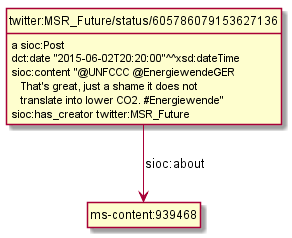
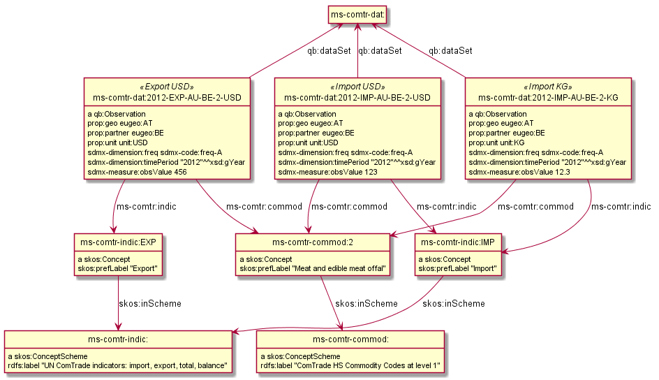

Multisensor RDF Application Profile
Table of Contents
- 1. Intro
- 2. Linguistic Linked Data
- 3. Prefixes
- 3.1. Multisensor Ontologies
- 3.2. Multisensor Datasets
- 3.3. External Datasets
- 3.4. Common Ontologies
- 3.5. Linguistic and Annotation ontologies
- 3.6. Statistical Ontologies
- 3.7. Eurostat Statistical Parameters
- 3.8. WorldBank Statistical Parameters
- 3.9. ComTrade and Distance Statistics
- 3.10. Auxiliary Prefixes
- 3.11. JSONLD Context
- 4. NIF Example
- 5. RDF Validation
- 6. SIMMO
- 7. Named Entity Recognition
- 8. Relation Extraction
- 9. Complex NLP Annotations
- 10. Multimedia Annotation
- 11. Content Translation
- 12. Multisensor Social Data
- 13. Sentiment Analysis
- 14. Text Characteristics
- 15. SIMMO Quality
- 16. Statistical Data for Decision Support
1 Intro
The Multisensor project analyzes and extracts data from mass- and social media documents (so-called SIMMOs), including text, images and video, speech recognition and translationn, across several languages. It also handles social network data, statistical data, etc.
Early on the project made the decision that all data exchanged between project partners (between modules inside and outside the processing pipeline) will be in RDF JSONLD format. The final data is stored in a semantic repository and is used by various User Interface components for end-user interaction. This final data forms a corpus of semantic data over SIMMOs and is an important outcome of the project.
The flexibility of the semantic web model has allowed us to accommodate a huge variety of data in the same extensible model. We use a number of ontologies for representing that data: NIF and OLIA for linguistic info, ITSRDF for NER, DBpedia and Babelnet for entities and concepts, MARL for sentiment, OA for image and cross-article annotations, W3C CUBE for statistical indicators, etc. In addition to applying existing ontologies, we extended them by the Multisensor ontology, and introduced some innovations like embedding FrameNet in NIF.
The documentation of this data has been an important ongoing task. It is even more important towards the end of the project, in order to enable the efficient use of MS data by external consumers.
This document describes the different RDF patterns used by Multisensor, and how the data fits together. Thus it represents an "RDF Application Profile" for Multisensor. We use an example-based approach, rather than the more formal and labourious approach being standardized by the W3C RDF Shapes working group (still in development).
We cover the following areas:
- Linguistic Linked Data in NLP Interchange Format (NIF), including Part of Speech (POS), dependency parsing, sentiment, Named Entity Recognition (NER), etc
- Speech recognition, translation
- Multimedia binding and image annotation
- Statistical indicators and similar data
- Social network popularity and influence, etc
A few technical aspects (eg Graph Normalization) are also covered. The companion document Multisensor SPARQL Queries describes various queries used by the system.
The document is developed in Emacs Org-mode using a Literate Programming style. Illustrative code and ontology fragments use RDF Turtle, and are assembled ("tangled") using Org Babel support to the ./img folder.
Figures are made with the rdfpuml tool from actual Turtle. This not only saves time, but also guarantees consistency of the figures with the examples and the ontology.
1.1 Links
- ./img/prefixes.ttl: all prefixes used by the project
- ./img/ontology.ttl: Multisensor ontology
- ./validation.html: various issues and incremental additions. When finalized, the data additions are moved to this document.
1.2 References
- Vladimir Alexiev, Multisensor Linked Data: early presentation, Multisensor project meeting. May 2014, Barcelona.
- Vladimir Alexiev, Making True RDF Diagrams with rdfpuml. Ontotext presentation. March 2016. Continuous HTML
- Vladimir Alexiev and Gerard Casamayor, FN goes NIF: Integrating FrameNet in the NLP Interchange Format. Linked Data in Linguistics (LDL-2016): Managing, Building and Using Linked Language Resources. Portorož, Slovenia, May 2016. Presentation.
- Vladimir Alexiev, Multisensor Linked Open Data. DBpedia meeting presentation. Leipzig, Germany, Sep 2016.
- Boyan Simeonov, Vladimir Alexiev, Dimitris Liparas, Marti Puigbo, Stefanos Vrochidis, Emmanuel Jamin and Ioannis Kompatsiaris, Semantic Integration of Web Data for International Investment Decision Support, 3rd International Conference on Internet Science (INSCI 2016). Florence, Italy, Sep 2016.
2 Linguistic Linked Data
There's been a huge drive in recent years to represent NLP data as RDF. NLP data is usually large, so does it make sense to represent it as RDF? What's the benefit?
- Ontologies, schemas and groups include: GRaF ITS2 FISE LAF LD4LT LEMON LIME LMF MARL NERD NIF NLP2RDF OLIA OntoLex OntoLing OntoTag Penn Stanford… my oh my!
- There are a lot of linguistic resources available that can be used profitably: BabelNet FrameNet GOLD ISOcat LemonUBY Multitext OmegaNet UBY VerbNet Wiktionary WordNet.
The benefit is that RDF offers a lot of flexibility for combining data on many different topics in one graph.
The NLP Interchange Format (NIF) is the pivot ontology that allows binding to text, and integrates many other aspects
- Linguistic Linked Data: presentation, 2014-10-08, Bonn, Germany. Covers NIF, POS (Penn), dependency parsing (Stanford), morphology (OLIA), sentiment (MARL), etc
- Zotero Linguistic LD bibliography
2.1 NIF Issues
As any new technology, NIF has various issues. A new version NIF 2.1 is in development and has raised its own issues. Issues that we have posted about NIF:
- specification/issues/1: nif:opinion vs marl:extractedFrom. Example: ./img/NIF-issue-1.ttl
- specification/issues/2: itsrdf vs fise properties. Example: ./img/NIF-issue-2.ttl
- ontologies/issues/12: location of NIF3.0 and issue tracker
- ontologies/issues/19 nif:AnnotationUnit vs nifs:Annotation vs fise:EntityAnnotation vs fam:EntityAnnotation
- ontologies/issues/18 comment on itsrdf:taAnnotatorsRef
- ontologies/issues/17 Are lots of sub-classes and sub-properties needed?
- ontologies/issues/16 URL persistence vs modularisation
- ontologies/issues/8 nif:lang has multiple domains
- documentation/issues/1: who's developing NIF 2.1 and where? (Provenance and Confidence)
3 Prefixes
Multisensor uses the following prefixes. We define the prefixes once, and then can use them in Turtle examples without redefining them, guaranteeting consistency. When this file is loaded in GraphDB, we can also make queries without worrying about the prefixes, and the ontologies are used for auto-completion of class and property names.
A lot of the prefixes are registered in prefix.cc and can be obtained with a URL like this:
3.1 Multisensor Ontologies
UPF has defined a number of subsidiary ontologies related to Dependency Parsing (dep) and FrameNet (frame and fe).
# Multisensor ontologies @prefix ms: <http://data.multisensorproject.eu/ontology#> . @prefix upf-deep: <http://taln.upf.edu/upf-deep#> . @prefix upf-dep-syn: <http://taln.upf.edu/olia/penn-dep-syntax#> . @prefix upf-dep-deu: <http://taln.upf.edu/upf-dep-deu#> . @prefix upf-dep-spa: <http://taln.upf.edu/upf-dep-spa#> . @prefix upf-pos-deu: <http://taln.upf.edu/upf-pos-deu#> . @prefix upf-pos-spa: <http://taln.upf.edu/upf-pos-spa#> . @prefix fe-upf: <http://taln.upf.edu/frame-element#> . @prefix frame-upf: <http://taln.upf.edu/frame#> .
The Multisensor ontology gathers various classes and properties. Here we define its metadata (header), while classes and properties are defined in later sections on as-needed basis.
ms: a owl:Ontology; rdfs:label "Multisensor Ontology"; rdfs:comment "Defines various classes and properties used by the FP7 Multisensor project"; rdfs:seeAlso <http://multisensorproject.eu>, <http://github.com/VladimirAlexiev/multisensor/>; dct:creator <http://multisensorproject.eu>, <mailto:Vladimir.Alexiev@ontotext.com>; dct:created "2016-06-20"^^xsd:date; dct:modified "2016-10-20"^^xsd:date; owl:versionInfo "1.0".
3.2 Multisensor Datasets
The main Multisensor dataset is ms-content: which includes the annotated news content (SIMMOs).
Additional data for social networks, annotations and locally defined concepts is also kept.
# Multisensor datasets @prefix ms-annot: <http://data.multisensorproject.eu/annot/>. @prefix ms-content: <http://data.multisensorproject.eu/content/>. @prefix ms-concept: <http://data.multisensorproject.eu/concept/>. @prefix ms-soc: <http://data.multisensorproject.eu/social/> .
3.3 External Datasets
We use two well-known LOD datasets for NER references (Babelnet bn and DBpedia dbr). Yago is used only in examples.
In addition, we make up a namespace for Twitter tags and users.
# External datasets @prefix bn: <http://babelnet.org/rdf/> . @prefix dbr: <http://dbpedia.org/resource/> . @prefix dbc: <http://dbpedia.org/resource/Category:> . @prefix yago: <http://yago-knowledge.org/resource/> . @prefix twitter: <http://twitter.com/> . @prefix twitter_tag: <http://twitter.com/hashtag/> . @prefix twitter_user: <http://twitter.com/intent/user?user_id=> .
3.4 Common Ontologies
The following ontologies are commonly used
# Commonly used ontologies @prefix bibo: <http://purl.org/ontology/bibo/>. @prefix dbo: <http://dbpedia.org/ontology/> . @prefix dbp: <http://dbpedia.org/property/> . @prefix dc: <http://purl.org/dc/elements/1.1/> . @prefix dct: <http://purl.org/dc/terms/> . @prefix dctype: <http://purl.org/dc/dcmitype/>. @prefix dqv: <http://www.w3.org/ns/dqv#> . @prefix foaf: <http://xmlns.com/foaf/0.1/> . @prefix ldqd: <http://www.w3.org/2016/05/ldqd#> . @prefix prov: <http://www.w3.org/ns/prov#>. @prefix schema: <http://schema.org/> . @prefix sioc: <http://rdfs.org/sioc/ns#>. @prefix skos: <http://www.w3.org/2004/02/skos/core#>. # System ontologies @prefix rdf: <http://www.w3.org/1999/02/22-rdf-syntax-ns#> . @prefix rdfs: <http://www.w3.org/2000/01/rdf-schema#> . @prefix owl: <http://www.w3.org/2002/07/owl#> . @prefix xsd: <http://www.w3.org/2001/XMLSchema#> .
3.5 Linguistic and Annotation ontologies
These ontologies are the main "work-horse" in Multisensor, i.e. used to represent the majority of the data.
NIF 2.1 RC1 (see section 2.1) defined a nif-ann: namespace that is used in MS.
Later NIF 2.1 abandoned the use of this prefix (instead falling back to the original nif: namespace),
but unfortunately MS data could not be updated to use nif: only.
# Linguistic and Annotation ontologies @prefix fam: <http://vocab.fusepool.info/fam#>. @prefix fise: <http://fise.iks-project.eu/ontology/>. @prefix its: <http://www.w3.org/2005/11/its/rdf#> . @prefix marl: <http://purl.org/marl/ns#> . @prefix nerd: <http://nerd.eurecom.fr/ontology#> . @prefix nif: <http://persistence.uni-leipzig.org/nlp2rdf/ontologies/nif-core#> . @prefix nif-ann: <http://persistence.uni-leipzig.org/nlp2rdf/ontologies/nif-annotation#>. @prefix oa: <http://www.w3.org/ns/oa#>. @prefix olia: <http://purl.org/olia/olia.owl#> . @prefix penn: <http://purl.org/olia/penn.owl#> . @prefix stanford: <http://purl.org/olia/stanford.owl#>. # FrameNet ontologies @prefix fn: <http://www.ontologydesignpatterns.org/ont/framenet/tbox/> . @prefix frame: <http://www.ontologydesignpatterns.org/ont/framenet/abox/frame/> . @prefix fe: <http://www.ontologydesignpatterns.org/ont/framenet/abox/fe/> . @prefix lu: <http://www.ontologydesignpatterns.org/ont/framenet/abox/lu/> . @prefix st: <http://www.ontologydesignpatterns.org/ont/framenet/abox/semType/> .
3.6 Statistical Ontologies
Multisensor uses statistical ontologies for representing Decision Support data.
# Common statistical ontologies (CUBE, SDMX) @prefix qb: <http://purl.org/linked-data/cube#> . @prefix sdmx-code: <http://purl.org/linked-data/sdmx/2009/code#> . @prefix sdmx-attribute: <http://purl.org/linked-data/sdmx/2009/attribute#> . @prefix sdmx-dimension: <http://purl.org/linked-data/sdmx/2009/dimension#> . @prefix sdmx-measure: <http://purl.org/linked-data/sdmx/2009/measure#> .
3.7 Eurostat Statistical Parameters
One of the main sources of statistical data is Eurostat. We also use some of their parameters (eg eugeo:) to represent our own stats datasets.
# Eurostat statistics @prefix eu: <http://eurostat.linked-statistics.org/dic/>. @prefix eu_age: <http://eurostat.linked-statistics.org/dic/age#>. @prefix eu_adj: <http://eurostat.linked-statistics.org/dic/s_adj#>. @prefix eu_flow: <http://eurostat.linked-statistics.org/dic/stk_flow#>. @prefix eu_partner: <http://eurostat.linked-statistics.org/dic/partner#>. @prefix eudata: <http://eurostat.linked-statistics.org/data/> . @prefix eugeo: <http://eurostat.linked-statistics.org/dic/geo#>. @prefix indic: <http://eurostat.linked-statistics.org/dic/indic#>. @prefix indic_bp: <http://eurostat.linked-statistics.org/dic/indic_bp#>. @prefix indic_et: <http://eurostat.linked-statistics.org/dic/indic_et#>. @prefix indic_is: <http://eurostat.linked-statistics.org/dic/indic_is#>. @prefix indic_na: <http://eurostat.linked-statistics.org/dic/indic_na#>. @prefix prop: <http://eurostat.linked-statistics.org/property#> . @prefix unit: <http://eurostat.linked-statistics.org/dic/unit#> .
3.8 WorldBank Statistical Parameters
WorldBank stats (as represented at Cerven Capadisli's site 270a) is also used by the project.
# WorldBank statistics @prefix country: <http://worldbank.270a.info/classification/country/> . @prefix indicator: <http://worldbank.270a.info/classification/indicator/> . @prefix property: <http://worldbank.270a.info/property/> .
3.9 ComTrade and Distance Statistics
@prefix comtrade: <http://comtrade.un.org/data/>. @prefix ms-indic: <http://data.multisensorproject.eu/indicators/> . @prefix ms-comtr: <http://data.multisensorproject.eu/comtrade/prop/> . @prefix ms-comtr-commod: <http://data.multisensorproject.eu/comtrade/commodity/> . @prefix ms-comtr-indic: <http://data.multisensorproject.eu/comtrade/indicator/> . @prefix ms-comtr-dat: <http://data.multisensorproject.eu/comtrade/data/> . @prefix ms-distance: <http://data.multisensorproject.eu/distance/> . @prefix ms-distance-dat: <http://data.multisensorproject.eu/distance/data/> .
3.10 Auxiliary Prefixes
puml is used in example files to give rdfpuml instructions that improve diagram appearance.
We always put such instructions after a row of ####### to distinguish them from actual RDF data.
# Auxiliary prefixes @prefix puml: <http://plantuml.com/ontology#>.
3.11 JSONLD Context
Multisensor uses JSONLD for communication of RDF data between the various pipeline modules. We use a JSONLD Context that reflects the prefixes to shorten the representation. We make the context using the following command:
riot --formatted=jsonld prefixes.ttl > multisensor.jsonld
4 NIF Example
This first example shows NLP data in RDF Turtle. It covers:
- NIF (text binding)
- OLIA (linguistic properties)
- Penn (POS tagging)
- Stanford (dependency parsing)
- ITS20 (NER or semantic annotation)
- NERD (NER classes)
- Stanbol/FISE (multiple NLP tools/annotations per word/phrase)
- MARL (opinion/sentiment)
It uses NE (entities) from DBpedia, WordNet, YAGO
4.1 JSONLD vs Turtle
While JSONLD is used by the MS partners for communicating data, it is harder to read than Turtle. Compare the example in Turtle to its JSONLD equivalent:
- ./img/NIF-example.ttl: easier to read, used for examples and discussions
- ./img/NIF-example.jsonld: used for machine communication
4.2 Example Context
Assume that http://example.com/blog/1 is a blog post with the text "Germany is the work horse of the European Union".
First we represent the text as a whole.
isString means this Context is considered equivalent to its string value.
sourceUrl points to Where the text came from, same as the @base
@base <http://example.com/blog/1/> . <#char=0,47> a nif:Context; # the complete text nif:isString "Germany is the work horse of the European Union"; nif:sourceUrl <>.
4.3 String Position URLs
The recommended NIF URLs are position-based (following RFC 5147): <#char=x,y> .
The count is 0-based and spaces are counted as 1 (NIF 2.0 Core Spec, String Counting and Determination of Length).
Here are the positions of each word:
Germany is the work horse of the European Union 0,7 8,10 11,14 15,19 20,25 26,28 29,32 33,41 42,47
All string URLs must refer to the context using referenceContext.
~beginIndex/endIndex are counted within the context's isString.
We indicate the datatype of beginIndex/endIndex explicitly, as specified in NIF, and unlike examples which omit it.
Please note that in Turtle a number like 7 means xsd:integer, not xsd:nonNegativeInteger (see Turtle spec)
<#char=0,7> a nif:RFC5147String; nif:referenceContext <#char=0,47>; nif:beginIndex "0"^^xsd:nonNegativeInteger; nif:endIndex "7"^^xsd:nonNegativeInteger. <#char=8,10> a nif:RFC5147String; nif:referenceContext <#char=0,47>; nif:beginIndex "8"^^xsd:nonNegativeInteger; nif:endIndex "10"^^xsd:nonNegativeInteger. <#char=11,14> a nif:RFC5147String; nif:referenceContext <#char=0,47>; nif:beginIndex "11"^^xsd:nonNegativeInteger; nif:endIndex "14"^^xsd:nonNegativeInteger. <#char=15,19> a nif:RFC5147String; nif:referenceContext <#char=0,47>; nif:beginIndex "15"^^xsd:nonNegativeInteger; nif:endIndex "19"^^xsd:nonNegativeInteger. <#char=20,25> a nif:RFC5147String; nif:referenceContext <#char=0,47>; nif:beginIndex "20"^^xsd:nonNegativeInteger; nif:endIndex "25"^^xsd:nonNegativeInteger. <#char=26,28> a nif:RFC5147String; nif:referenceContext <#char=0,47>; nif:beginIndex "26"^^xsd:nonNegativeInteger; nif:endIndex "28"^^xsd:nonNegativeInteger. <#char=29,32> a nif:RFC5147String; nif:referenceContext <#char=0,47>; nif:beginIndex "29"^^xsd:nonNegativeInteger; nif:endIndex "32"^^xsd:nonNegativeInteger. <#char=33,41> a nif:RFC5147String; nif:referenceContext <#char=0,47>; nif:beginIndex "33"^^xsd:nonNegativeInteger; nif:endIndex "41"^^xsd:nonNegativeInteger. <#char=42,47> a nif:RFC5147String; nif:referenceContext <#char=0,47>; nif:beginIndex "42"^^xsd:nonNegativeInteger; nif:endIndex "47"^^xsd:nonNegativeInteger.
We also introduce URLs for a couple of phrases.
<#char=15,25> a nif:RFC5147String; nif:referenceContext <#char=0,47>; nif:beginIndex "15"^^xsd:nonNegativeInteger; nif:endIndex "25"^^xsd:nonNegativeInteger. <#char=33,47> a nif:RFC5147String; nif:referenceContext <#char=0,47>; nif:beginIndex "33"^^xsd:nonNegativeInteger; nif:endIndex "47"^^xsd:nonNegativeInteger.
4.4 Position URLs to Word URLs
In this example we introduce word-based URLs, which make the following statements more clear (especially for Stanford Dependency Parse). owl:sameAs makes two resources equivalent, so all their statements are "smushed" between each other. The URLs don't make any semantic difference, and in the actual implementation we use only position-based URLs. We also introduce URLs for the text as a whole, and a couple of phrases.
<#char=0,47> owl:sameAs <#ROOT-0>. <#char=0,7> owl:sameAs <#Germany-1>. <#char=8,10> owl:sameAs <#is-2>. <#char=11,14> owl:sameAs <#the-3>. <#char=15,19> owl:sameAs <#work-4>. <#char=20,25> owl:sameAs <#horse-5>. <#char=26,28> owl:sameAs <#of-6>. <#char=29,32> owl:sameAs <#the-7>. <#char=33,41> owl:sameAs <#European-8>. <#char=42,47> owl:sameAs <#Union-9>. <#char=15,25> owl:sameAs <#work-horse>. <#char=33,47> owl:sameAs <#European-Union>.
4.5 Basic Text Structure
NLP tools would usually record whether each URL is a Word, Phrase, Sentence…
URLs may state the corresponding word with nif:anchorOf.
This is redundant, since it can be inferred from the context's isString and indexes,
but is very useful for debugging, and Multisensor records it in production.
We can also record Lemma and Stemming
<#ROOT-0> a nif:Sentence. # no nif:anchorOf because it already has the mandatory subprop nif:isString <#Germany-1> nif:anchorOf "Germany"; a nif:Word. <#is-2> nif:anchorOf "is"; a nif:Word. <#the-3> nif:anchorOf "the"; a nif:Word. <#work-4> nif:anchorOf "work"; a nif:Word. <#horse-5> nif:anchorOf "horse"; a nif:Word. <#of-6> nif:anchorOf "of"; a nif:Word. <#the-7> nif:anchorOf "the"; a nif:Word. <#European-8> nif:anchorOf "European"; a nif:Word. <#Union-9> nif:anchorOf "Union"; a nif:Word. <#work-horse> nif:anchorOf "work horse"; a nif:Phrase. <#European-Union> nif:anchorOf "European Union"; a nif:Phrase. ############################## Stemming/Lemmatization <#Germany-1> nif:lemma "Germany". # same for all words, except: <#European-8> nif:lemma "Europe". # For a more interesting example, let's assume there's a 10th word "favourite". <#favourite-10> nif:stem "favourit". # Snowball Stemmer <#favourite-10> nif:lemma "favorite". # Stanford Core NLP
4.6 Part of Speech
Let's represent some POS info using the Penn tagset. It is part of the OLIA Ontologies, and below we refer to files from that page.
The Penn parser produces his parse:
Germany/NNP is/VBZ the/DT work/NN horse/NN of/IN the/DT European/NNP Union/NNP
We represent it below using two properties:
nif:oliaLinkis anowl:Individualrepresenting the individual tagnif:oliaCategoryis anowl:Classrepresenting the same
Since in penn.owl the individuals have the same rdf:type as the given class, you only need one, the other is redundant.
<#Germany-1> nif:oliaLink penn:NNP; nif:oliaCategory penn:ProperNoun. <#is-2> nif:oliaLink penn:VBZ; nif:oliaCategory penn:BePresentTense. <#the-3> nif:oliaLink penn:DT; nif:oliaCategory penn:Determiner. <#work-4> nif:oliaLink penn:NN; nif:oliaCategory penn:CommonNoun. # POS is NN, but the syntactic role is Adjective <#horse-5> nif:oliaLink penn:NN; nif:oliaCategory penn:CommonNoun. <#of-6> nif:oliaLink penn:IN; nif:oliaCategory penn:PrepositionOrSubordinatingConjunction. <#the-7> nif:oliaLink penn:DT; nif:oliaCategory penn:Determiner. <#European-8> nif:oliaLink penn:NNP; nif:oliaCategory penn:ProperNoun. <#Union-9> nif:oliaLink penn:NNP; nif:oliaCategory penn:ProperNoun.
One could consume POS at a higher level of abstraction: OLIA abstracts the particular POS tagset.
penn-link.owl defines Penn classes as subclasses of OLIA classes, so one could consume OLIA only.
If you produce a reduced tagset (eg only ProperNouns), use the OLIA class directly.
Please note that nif:oliaLink (the individual) doesn't apply here, only nif:oliaCategory (the class).
<#Germany-1> nif:oliaCategory olia:ProperNoun. <#is-2> nif:oliaCategory [owl:unionOf (olia:FiniteVerb olia:StrictAuxiliaryVerb)], [a owl:Restriction; owl:onProperty olia:hasTense; owl:allValuesFrom olia:Present]. <#the-3> nif:oliaCategory penn:Determiner. # "Not clear whether this corresponds to OLiA/EAGLES determiners" <#work-4> nif:oliaCategory olia:CommonNoun. <#horse-5> nif:oliaCategory olia:CommonNoun. <#of-6> nif:oliaCategory [owl:unionOf (olia:Preposition olia:SubordinatingConjunction)]. <#the-7> nif:oliaCategory penn:Determiner. # "Not clear whether this corresponds to OLiA/EAGLES determiners" <#European-8> nif:oliaCategory olia:ProperNoun. <#Union-9> nif:oliaCategory olia:ProperNoun.
As you see above, the OLIA abstraction doesn't work perfectly in all cases:
penn:Determinerdoesn't have an OLIA mappingpenn:PrepositionOrSubordinatingConjunctionmaps to aunionOf(disjunction), but you can't query by such classpenn:BePresentTenseis worse: it's also aunionOf; further a reasoner will restrict anyolia:hasTenseproperty to have typeolia:Present. But neither OLIA nor Penn define any values for that property!
Rather than using the PENN-OLIA mapping, we could attach NLP features directly to words, eg
<#is-2> a olia:Verb; olia:hasTense ms:VerySpecialPresentTense. ms:VerySpecialPresentTense a olia:Present, olia:Tense.
4.7 Dependency Parse
The Stanford Dependency Parser produces the following parse:
(ROOT
(S
(NP (NNP Germany))
(VP (VBZ is)
(NP
(NP (DT the) (NN work) (NN horse))
(PP (IN of)
(NP (DT the) (NNP European) (NNP Union)))))))
A while ago the details of the parse were (currently it's a bit different):
| individual(gov,dep) | class<superclass<superclass |
|---|---|
| nsubj(horse-5,Germany-1) | NominalSubject<Subject<Argument<Dependent<DependencyLabel |
| cop(horse-5,is-2) | Copula<Auxiliary<Dependent<DependencyLabel |
| det(horse-5,the-3) | Determiner<Modifier<Dependent<DependencyLabel |
| nn(horse-5,work-4) | NounCompoundModifier<Modifier<Dependent<DependencyLabel |
| root(ROOT-0,horse-5) | Root<DependencyLabel |
| prep(horse-5,of-6) | PrepositionalModifier<Modifier<Dependent<DependencyLabel |
| det(Union-9,the-7) | Determiner<Modifier<Dependent<DependencyLabel |
| amod(Union-9,European-8) | AdjectivalModifier<Modifier<Dependent<DependencyLabel |
| pobj(of-6,Union-9) | ObjectOfPreposition<Object<Complement<Argument<Dependent<DependencyLabel |
individual is an owl:Individual having the class (and all superclasses) as its type
There are two ways to represent this:
- The easy way: use a single property (
nif:dependency), attach the Stanford Dependency class to target
<#horse-5> nif:dependency <#Germany-1>. <#Germany-1> a stanford:NominalSubject. <#horse-5> nif:dependency <#is-2>. <#is-2> a stanford:Copula. <#horse-5> nif:dependency <#the-3>. <#the-3> a stanford:Determiner. <#horse-5> nif:dependency <#work-4>. <#work-4> a stanford:NounCompoundModifier. <#ROOT-0> nif:dependency <#horse-5>. <#horse-5> a stanford:Root. <#horse-5> nif:dependency <#of-6>. <#of-6> a stanford:PrepositionalModifier. <#Union-9> nif:dependency <#the-7>. <#the-7> a stanford:Determiner. <#Union-9> nif:dependency <#European-8>. <#European-8> a stanford:AdjectivalModifier. <#of-6> nif:dependency <#Union-9>. <#Union-9> a stanford:ObjectOfPreposition.
- The hard way: make separate DependencyLabel nodes
We use <#individual(gov,dep)> as URL: that includes numbered words, so is guaranteed to be unique.
<#nsubj(horse-5,Germany-1)> a olia:Relation, stanford:NominalSubject; olia:hasSource <#horse-5>; olia:hasTarget <#Germany-1>. <#cop(horse-5,is-2)> a olia:Relation, stanford:Copula; olia:hasSource <#horse-5>; olia:hasTarget <#is-2>. <#det(horse-5,the-3)> a olia:Relation, stanford:Determiner; olia:hasSource <#horse-5>; olia:hasTarget <#the-3>. <#nn(horse-5,work-4)> a olia:Relation, stanford:NounCompoundModifier; olia:hasSource <#horse-5>; olia:hasTarget <#work-4>. <#root(ROOT-0,horse-5)> a olia:Relation, stanford:Root; olia:hasSource <#ROOT-0>; olia:hasTarget <#horse-5>. <#prep(horse-5,of-6)> a olia:Relation, stanford:PrepositionalModifier; olia:hasSource <#horse-5>; olia:hasTarget <#of-6>. <#det(Union-9,the-7)> a olia:Relation, stanford:Determiner; olia:hasSource <#Union-9>; olia:hasTarget <#the-7>. <#amod(Union-9,European-8)> a olia:Relation, stanford:AdjectivalModifier; olia:hasSource <#Union-9>; olia:hasTarget <#European-8>. <#pobj(of-6,Union-9)> a olia:Relation, stanford:ObjectOfPreposition; olia:hasSource <#of-6>; olia:hasTarget <#Union-9>.
We use the following class hierarchy: stanford:DependencyLabel<olia_sys:Feature<LinguisticAnnotation
The latter is kind of like Relation, which has properties hasSource, hasTarget
4.8 NER Classes
There are two mechanisms to represent Named Entity Recognition.
If you can recognize only the entity type:
<#Germany-1> its:taClassRef nerd:Country. <#European-Union> its:taClassRef nerd:Country. # or AdministrativeRegion or Location
This uses the NERD ontology, which includes:
- NERD Core (top-level) classes: Thing Amount Animal Event Function Location Organization Person Product Time
- NERD specific classes: AdministrativeRegion Aircraft Airline Airport Album Ambassador Architect Artist Astronaut Athlete Automobile Band Bird Book Bridge Broadcast Canal Celebrity City ComicsCharacter Company Continent Country Criminal Drug EducationalInstitution EmailAddress FictionalCharacter Holiday Hospital Insect Island Lake Legislature Lighthouse Magazine Mayor MilitaryConflict Mountain Movie Museum MusicalArtist Newspaper NonProfitOrganization OperatingSystem Park PhoneNumber PoliticalEvent Politician ProgrammingLanguage RadioProgram RadioStation Restaurant River Road SchoolNewspaper ShoppingMall SoccerClub SoccerPlayer Software Song Spacecraft SportEvent SportsLeague SportsTeam Stadium Station TVStation TennisPlayer URL University Valley VideoGame Weapon Website
4.9 NER Individuals
If you can recognize specific entities in LOD datasets, you can capture such annotations, eg:
- Wordnet RDF for phrases: search Wordnet, then pick the correct sense
104608649-n - DBpedia for real-word entities
- Babelnet for phrases or real-word entities: search Babelnet, then pick the correct sense
00081596n
<#work-horse> its:taIdentRef <http://wordnet-rdf.princeton.edu/wn31/104608649-n>, bn:s00081596n. <#Germany-1> its:taIdentRef dbr:Germany. <#European-Union> its:taIdentRef dbr:European_union. dbr:European_union a dbo:Country, dbo:Place, dbo:PopulatedPlace, yago:G20Nations, yago:InternationalOrganizationsOfEurope. # etc dbr:Germany a dbo:Country, dbo:Place, dbo:PopulatedPlace, yago:FederalCountries, yago:EuropeanUnionMemberEconomies. # etc
These LOD sources include useful info, eg:
- Wordnet's 104608649-n.ttl has:
- wn:gloss "machine that performs dependably under heavy use"
- wn:sample "the IBM main frame computers have been the workhorse of the business world"
- declared owl:sameAs older Wordnet 2.0 representation and newer LemonUby representation
- DBpedia has info about population, area, etc.
It also has extensive class info as shown above, so there's no need to use
its:taClassRef nerd:Country. But other NERD classes may be useful, eg Phone, Email: for those you can't refer to DBpedia and must useits:taClassRef - Babelnet has links to Wordnet, DBpedia, Wikipedia categories, skos:broader exracted from Wordnet/DBpedia, etc. The Multisensor Entity Lookup service uses Babelnet since it's a more modern resource integrating the two above, plus more
4.10 NER Provenance
We can record the tool that created the NER annotation and its confidence. MS uses up to two tools for NER: Linguatec and Babelnet.
- The Linguatec annotation is always emitted first, directly over the
nif:Wordornif:Phrase - The Babelnet is emitted second.
If there is no Linguatec annotation for the same
nif:Phrase, it's emitted directly over thenif:Phrase. If there are two annotations, the Babelnet annotation is emitted indirectly, over anif:AnnotationUnit.
Here we show the more complex latter case.
<#Germany-1> a nif:Word; its:taIdentRef dbr:Germany; nif-ann:provenance <http://linguatec.com>; nif-ann:confidence "0.9"^^xsd:double; nif-ann:annotationUnit <#Germany-1-annot-Babelnet>. <#Germany-1-annot-Babelnet> a nif-ann:AnnotationUnit; its:taIdentRef bn:sTODO; nif-ann:provenance <http://babelfy.org/>; nif-ann:confidence "1.0"^^xsd:double.
Note: previously we used the NIF Stanbol profile (FISE) instead of nif-ann, eg:
<#Germany-1-enrichment-1> a fise:EntityAnnotation; fise:extracted-from <#Germany-1>; fise:entity-type nerd:Country; fise:entity-reference dbr:Germany; dct:creator <http://babelnet.org>; fise:confidence "1.0"^^xsd:float.
But it is a bad practice to use two completely different property sets for two similar situations. Just because in the second case there's an intermediate node for the annotation, doesn't mean the properties should be completely different. We posted that as a NIF issue: specification/issues/2
4.11 Sentiment Analysis with MARL
Assume there are some comments about our blog, which we represent using SIOC.
Comments are a sort of sioc:Post, since there is no separate sioc:Comment class
<comment/1> a sioc:Post; sioc:reply_of <>; sioc:has_creator <http://example.com/users/Hans>; sioc:content "Yes, we Germans are the hardest-working people in the world". <comment/2> a sioc:Post; sioc:reply_of <>; sioc:has_creator <http://example.com/users/Dimitrios>; sioc:content "Bullshit! We Greeks are harder-working".
Now assume a sentiment analysis algorithm detects the sentiment of the comment posts. We represent them using MARL.
<opinion/1> a marl:Opinion; marl:extractedFrom <comment/1>; marl:describesObject <>; marl:opinionText "Yes"; marl:polarityValue 0.9; marl:minPolarityValue -1; marl:maxPolarityValue 1; marl:hasPolarity marl:Positive. <opinion/2> a marl:Opinion; marl:extractedFrom <comment/2>; marl:describesObject <>; marl:opinionText "Bullshit!"; marl:polarityValue -1; marl:minPolarityValue -1; marl:maxPolarityValue 1; marl:hasPolarity marl:Negative.
Note: the following properties are useful for sentiment about vendors (eg AEG) or products (eg appliances):
marl:describesObject(eg laptop)marl:describesObjectPart(eg battery, screen)marl:describesFeature(eg for battery: battery life, weight)
Often it's desirable to aggregate opinions, so one doesn't have to deal with individual opinions
(marl:aggregatesOpinion is optional)
<opinions> a marl:AggregatedOpinion; marl:describesObject <>; marl:aggregatesOpinion <opinion/1>, <opinion/2>; # can skip marl:opinionCount 2; marl:positiveOpinionsCount 1; # sic, this property is spelled in plural marl:negativeOpinionCount 1; marl:polarityValue -0.05; # simple average marl:minPolarityValue -1; marl:maxPolarityValue 1; marl:hasPolarity marl:Neutral.
4.12 Sentiment Analysis in NIF
NIF integrates MARL using property nif:opinion from nif:String to marl:Opinion.
But that's declared inverseOf marl:extractedFrom, which in the MARL example points to sioc:Post (not the nif:String content of the post).
So something doesn't mesh here (specification/issues/1).
We could mix SIOC and NIF properties on <comment/1>, but then nif:sourceUrl would point to itself…
<comment/1> a nif:Context; nif:sourceUrl <comment/1>; nif:isString "Yes, we Germans are the hardest-working people in the world"; nif:opinion <opinion/1>. <comment/2> a nif:Context; nif:sourceUrl <comment/2>; nif:isString "Bullshit! We Greeks are harder-working"; nif:opinion <opinion/2>.
It may be more meaningful to use NIF to express which word carries the opinion (like marl:opinionText)
<comment/1#char=0,> a nif:Context; nif:sourceUrl <comment/1>; nif:isString "Yes, we Germans are the hardest-working people in the world". <comment/1#char=0,3> a nif:String; nif:referenceContext <comment/1#char=0,>; nif:anchorOf "Yes"; nif:opinion <opinion/1>. <comment/2#char=0,> a nif:Context; nif:sourceUrl <comment/2>; nif:isString "Bullshit! We Greeks are harder-working". <comment/2#char=0,9> a nif:String; nif:referenceContext <comment/2#char=0,>; nif:anchorOf "Bullhshit!"; nif:opinion <opinion/2>.
5 RDF Validation
All generated NIF files should be validated, to avoid mistakes propagating between the pipeline modules. We first tried the NIF Validator, but quickly switched to RDFUnit validation.
5.1 NIF Validator
The basic NIF validator is part of the NIF distribution (doc, software, tests). Unfortunately there are only 11 tests, so it's not very useful
- You can understand the tests just by reading the error messages, e.g.
nif:anchorOf must match the substring of nif:isString calculated with begin and end index
- It says "json-ld not implemented yet", so we need to convert to ttl first (I use apache-jena-2.12.1)
rdfcat -out ttl test-out.jsonld | java -jar validate.jar -i - -o text
5.2 RDFUnit Validation
A much better validator is RDFUnit (home, demo, source, paper NLP data cleansing based on Linguistic Ontology constraints) This is implemented in the Multisensor RDF_Validation_Service
I tried their demo site with some examples.
- Data Selection> Direct Input> Turtle> Load
Data loaded successfully! (162 statements)
- Constraints Selection> Automatic> Load
Constraints loaded successfully: (foaf, nif, itsrdf, dcterms)
- Test Generation
Completed! Generated 514 tests
(That's a lot of tests!)
- Testing> Report Type> Status (all)> Run Tests
Total test cases 514, Succeeded 507, Failed 7
(Those "Succeeded" also in many cases mean errors)
5.2.1 Generated Tests per Ontology

| URI | Automatic | Manual |
|---|---|---|
| http://xmlns.com/foaf/0.1/ | 174 | - |
| http://persistence.uni-leipzig.org/nlp2rdf/ontologies/nif-core# | 199 | 10 |
| http://www.w3.org/2005/11/its/rdf# | 75 | - |
| http://purl.org/dc/terms/ | 56 | - |
| http://www.w3.org/2006/time# | 183 | - |
| http://dbpedia.org/ontology/ | 9281 | 14 |
(Even though I canceled dbo generation prematurely.)
This is too much for us, we don't want the DBO tests. In particular, the Status (all) report includes a lot of "violations" that come from ontologies not from our data.
5.2.2 RDFUnit Test Results
Here are the results. "Resources" is a simple tabular format (basically URL & error), "Annotated Resources" provides more detail (about the errors pertaining to each URL)
| Source File | Status | Annotated Resources |
| ./img/NIF-test1.ttl | ./img/NIF-test1-out.xls | ./img/NIF-test1-annotated.ttl |
| ./img/NIF-test2.ttl | ./img/NIF-test2-out.xls | ./img/NIF-test2-annotated.ttl |
5.3 Manual Validation
In addition to RDFUnit validation, we used a lot of manual validation to check for semantic (as opposed to syntactic) errors. The RDF_Validation page describes a workflow for preparing pipeline results for validation.
Please post only Turtle files, not JSON files since they are impossible to check manually.
- Get Jena (eg apache-jena-3.0.0.tar.gz), unzip it somewhere and add the bin directory to your path. We'll use RIOT (RDF I/O Tool).
- Get Turtle: You can get a Turtle representation of the SIMMO in one of two ways
5.3.1 Get Turtle from Store
- Store the SIMMO using the RDF Storing Service
- Get the SIMMO out using a query like this (saved as "a SIMMO graph"), and then save the result as
file-noprefix.ttl(Turtle).
<pre>construct {?s ?p ?o} where {graph <http://data.multisensor.org/content/8006dcd60b292feaaef24abc9ec09e2230aab83e> {?s ?p ?o}}
- There's also a REST call to get the SIMMO out that's easier to use from the command line
5.3.2 Get Turtle from SIMMO JSON
- get the content of the "rdf" key out of the SIMMO JSON. Unescape quotes. Save as
file.jsonldSo instead of this:"rdf":["[{\"@id\":\"http://data.multisensor...[{\"@value\":\"Germany\"}]}]"],"category":""}</pre>
You need this:
[{"@id":"http://data.multisensor...[{"@value":"Germany"}]}] - You can do this manually, or with RIOT that can convert the stringified RDF field into more readable JSONLD format:
riot --output=jsonld rdf_output_string.jsonld > new_readable_file.jsonld
Instead of a single string, the results will be displayed as:
"@graph" : [ { "@id" : "http://data.multisensorproject.eu/content/53a0938bc4770c6ba0e7d7b9ca88a637f9e9c304#Amount=10000_Euro", "@type" : [ "http://schema.org/QuantitativeValue", "http://nerd.eurecom.fr/ontology#Amount" ], "name" : "10000 Euro" }, { "@id" : "http://data.multisensorproject.eu/content/53a0938bc4770c6ba0e7d7b9ca88a637f9e9c304#Amount=2000_Euro", "@type" : [ "http://schema.org/QuantitativeValue", "http://nerd.eurecom.fr/ontology#Amount" ], "name" : "2000 Euro" }, {...
No matter which of the two methods you used, the rest is the same
- Validate it with RIOT: this is optional but recommended
riot --validate file.jsonld
- Convert to Turtle. Omit "WARN riot" lines which would make the Turtle invalid
riot --output turtle file.jsonld | grep -v "WARN riot" > file-noprefix.ttl
5.3.3 Prettify Turtle
Unfortunately this file doesn't use prefixes, so the URLs are long and ugly
- Download ./img/prefixes.ttl (this file is updated about once a month)
- Concat the two:
cat prefixes.ttl file-noprefix.ttl > file-withprefix.ttl
- Prettify the Turtle to make use of the prefixes and to group all statements of the same subject together:
riot --formatted=turtle file-withprefix.ttl > file.ttl
Optional manual edits:
- Add on top a base, using the actual SIMMO base, eg
@base <http://data.multisensorproject.eu/content/53a0938bc4770c6ba0e7d7b9ca88a637f9e9c304>.
- Replace this string with "" (I don't know why RIOT doesn't use the base, even if I specify the –base option)
- Sort paragraphs (i.e. statement clusters)
Post in Jira that last prettified file.ttl. Thanks!
6 SIMMO
Multisensor crawls and analyzes news items and social network posts, collectively called SIMMOs.
Each SIMMO has a GUID URL in the ms-content: namespace.
Below we assume the @base is set to the SIMMO URL, eg
@base <http://data.multisensorproject.eu/content/04858f1e0cbc73ab672b1f6acab05afe2c18b0ae>.
Therefore <> and ms-content:<GUID> mean the same URL.
6.1 Graph Handling
The RDF_Storing_Service saves all data about a SIMMO in a named graph having the same URL as the SIMMO base URL. This makes it easy to get or overwrite all data about the SIMMO.
6.1.1 PUT vs POST
The RDF_Storing_Service supports the SPARQL Graph Store Protocol:
- GET to get a graph
- PUT to write or overwrite a graph (see HTTP PUT in the above specification)
- POST to add data to he graph
In addition to NLP and NER results over the SIMMO (article), the same graph accommodates image annotations, and NLP/NER of video transcripts/ASR. Therefore one should use a sequence like this to write all of the data:
- PUT SIMMO
- POST ASR0
- POST ASR1 …
- POST image0 annotation
- POST image1 annotation …
6.1.2 Graph Normalization
Submitting all SIMMO info in one graph makes storing it easier, but it also leads to duplication of common triples. Eg consider this:
<#char=100,107> its:taIdentRef dbr:Germany. dbr:Germany a nerd:Location; foaf:name "Germany". # Common triples
If dbr:Germany appears 1000 times in SIMMOs, these common triples will be duplicated 1000 times in different named graphs.
This leads to extreme slowness of ElasticSearch indexing:
when adding the 1000th occurrence of dbr:Germany it indexes (the same) foaf:name "Germany" 1000 times,
i.e. storing time grows potentially quadratically with the number of SIMMOs.
The fix we implemented is graph normalization: the storing service examines every triple <s,p,o>.
- If
sstarts with one of these prefixes the triple is stored in the default graph:http://dbpedia.org http://babelnet.org
- Otherwise the triple is stored in the SIMMO graph.
This still writes common triples 1000 times, but there is no duplication since a triple can exist only once in a given graph.
- Note: some SIMMOs contain subjects that don't have the SIMMO base URL as prefix, namely embedded videos and images. It's not correct to move them to the default graph, so we work with an explicit list of common prefixes.
6.1.2.1 Query Changes
The tradeoff is that you won't be able to get all SIMMO data by simply asking for a graph.
Eg query 2.3 Retrieve NEs (Select) was a bit sloppy, since it asked for certain types (and foaf:name) by graph, without looking for any relation:
SELECT DISTINCT ?ne ?type ?name { GRAPH <> { ?ne a ?type; foaf:name ?name FILTER (?type IN (dbo:Person, dbo:Organization, nerd:Amount, nerd:Location, nerd:Time))}}
After graph normalization is applied, we need to find the NEs by relation its:taIdentRef,
and get their common triples from outside the SIMMO graph:
SELECT distinct ?ne ?type ?name { GRAPH <> { [] its:taIdentRef ?ne. ?ne a ?type} FILTER (?type IN (dbo:Person, dbo:Organization, nerd:Amount, nerd:Location, nerd:Time))} ?ne foaf:name ?name }
(This query works with or without graph normalization, since the part outside GRAPH {..} looks in all graphs, both SIMMO and default).
6.1.2.2 Normalization Problems
Moving common triples outside of the SIMMO graph raises two problems:
- If you examine the results of the query above, you'll see that some entities (eg
dbr:Facebook) have several labels, eg"Facebook, Inc."@en "Facebook"^^xsd:string
The reason is that different SIMMOs have different versions of the label, and different versions of the pipeline emit different literals ("en" language vs xsd:string). Both of these labels will be indexed in ElasticSearch for all occurrences of this NE. The pipeline has emitted the labels globally (as
foaf:nameofdbr:Facebook) rather than locally (eg asnif:anchorOf), in effect asserting that both are globally valid labels of Facebook. So that's a correct consequence of the data as stored. - If the last SIMMO referring to a global NE is deleted, that NE will remain as "garbage" in the common graph. But I don't think that is a significant problem, since the amount of such "garbage" won't be large, and since it is harmless.
6.2 SIMMO Context
The basic structure of a SIMMO consists of:
- a
foaf:Documentdescribing the source document. We usedc:for literals anddct:for resources (URLs) - a
nif:Contextdescribing the full text of the article (the full text of any video transcriptions is separate).
graph <> { <> a foaf:Document; dc:type "article"; dc:language "en"; dbp:countryCode "GB"; dc:source "Guardian"; dct:source <https://www.theguardian.com/uk-news/2016/jun/20/zane-gbangbola-inquest-neighbour-hydrogen-cyanide>; dc:creator "Caroline Davies"; dc:date "2016-06-20T18:45:07.000+02:00"^^xsd:dateTime; dct:issued "2016-06-30T12:34:56.000+02:00"^^xsd:dateTime; dc:title "I was told I might have 20 minutes to live, neighbour tells Zane inquest"; dc:description "Zane’s parents Kye Gbangbola (front centre) and Nicole Lawler (right) at a protest..."; dc:subject "Lifestyle & Leisure"; schema:keywords "UK news, Zane Gbangbola, Hydrogen Cyanide". <#char=0,5307> a nif:RFC5147String, nif:Context; nif:sourceUrl <> . nif:beginIndex "0"^^xsd:nonNegativeInteger; nif:endIndex "5307"^^xsd:nonNegativeInteger; nif:isString """I was told I might have 20 minutes to live, neighbour tells Zane inquest Zane’s parents Kye Gbangbola (front centre) and Nicole Lawler (right) at a protest in 2014. Photograph: Lauren Hurley/PA ...""". }
Explanation:
| element | meaning |
|---|---|
| foaf:Document | Basic SIMMO metadata |
| dc:type | kind of SIMMO |
| dc:language | Language of content |
| dbp:countryCode | Code of originaing country |
| dc:source | Literal identifying the source (newspaper or social network) |
| dct:source | URL of source article |
| dc:creator | Author: journalist, blogger, etc |
| dc:date | Timestamp when crawled |
| dct:issued | Timestamp when processed by pipeline and ingested to GraphDB |
| dc:title | Short title |
| dc:description | Longer description |
| dc:subject | Article subject, roughly corresponding to IPTC Subject Codes |
| schema:keywords | Free keywords |
| nif:Context | "Reference Context": holds the full text, root of all NIF data. |
| Each word/sentence points to it using nif:referenceContext. | |
The URL #char=<beg,end> follows RFC 5147 |
|
| nif:sourceUrl | Points to the SIMMO |
| nif:beginIndex | Always 0 for this node. A xsd:nonNegativeInteger |
| nif:endIndex | Length of the text |
| nif:isString | The full text |
7 Named Entity Recognition
This section describes the representation of NER in Multisensor
7.1 NER Mapping
Multisensor recognizes a number of Named Entity types. The following table specifies potential NE properties and what they are mapped to.
| Class /Property | Type/enum | Mapping | Notes |
|---|---|---|---|
| all | nif:Word or nif:Phrase | ||
| text | string | n/a | nif:anchorOf omitted |
| onset | number | nif:beginIndex | start |
| offset | number | nif:endIndex | end |
| Person | dbo:Person, foaf:Person; nerd:Person | ||
| test | string | foaf:name | |
| firstname | string | foaf:firstName | |
| lastname | string | foaf:lastName | |
| gender | male, female | dbo:gender | dbp:Male, dbp:Female |
| occupation | string | rdau:professionOrOccupation | dbo:occupation and dbo:profession are object props |
| Location | type=other | nerd:Location | No need to use dbo:Location if you can't identify the type |
| Location | type=country | dbo:Country; nerd:Country | |
| Location | type=region | dbo:Region; nerd:AdministrativeRegion | |
| Location | type=city | dbo:City; nerd:City | |
| Location | type=street | schema:PostalAddress; nerd:Location | Put text in schema:streetAddress |
| Organisation | type=institution | dbo:Organisation, foaf:Organization; nerd:Organization | |
| Organisation | type=company | dbo:Company, foaf:Company; nerd:Company | |
| Product | nerd:Product | ||
| type | string | not yet | don't know yet what makes sense here |
| Time | time:Instant; nerd:Time | TODO: can you parse to XSD datetime components? | |
| year | string | time:Instant; nerd:Time | |
| month | string | time:Instant OR yago:Months; nerd:Time | if yago:Months then dbp:January… |
| day | string | time:Instant; nerd:Time | |
| time | string | time:Instant; nerd:Time | |
| weekday | string | yago:DaysOfTheWeek; nerd:Time | dbp:Sunday,… Put text in rdfs:label |
| rel | string | nerd:Time | relative expression, eg "the last three days" |
| other | string | nerd:Time | any other time expression, eg "Valentine's day" |
| Amount | type=price | schema:PriceSpecification; nerd:Amount | |
| unit | string | schema:priceCurrency | 3-letter ISO 4217 format |
| amount | number | schema:price | "." as decimal separator |
| Amount | type=unit | schema:QuantitativeValue; nerd:Amount | How about percentage?? |
| unit | string | schema:unitCode | Strictly speaking, UN/CEFACT Common Code (eg GRM for grams) |
| amount | number | schema:value | |
| Name | nerd:Thing | ||
| type | string | dc:type | a type if anything can be identified, otherwise empty |
Notes
- Classes are uppercase, Properties are lowercase
- A recognized Named Entity is attached to the word using
its:taIdentRef - NERD classes are attached to the word using
its:taClassRef - Other classes are attached to the NE using
rdf:type. - The Amount mapping uses schema.org classes/properties, which were borrowed from GoodRelations
dbo:genderis an object property, though it doesn't specify the values to usedc:typeis a literal. We attach it to the word directly- We also include Provenance and Confidence for each annotation (see section 4.10)
7.2 Named Entity URLs
We use two kinds of Named Entity URLs:
- Global: if a NE can be identified in DBpedia or Babelnet, use its global URL, eg
dbr:Angela_Merkel - Local: if a NE is only recognized, but not globally identified,
use per-document URL consisting of the type and label (replacing punctuation with "_"), eg
<#Person=Angela_Merkel>. This does not allow two different John_Smiths in one document, but the chance of this to happen is small.
Note on slash vs Hash: everyting after a # stripped by the client before it makes a HTTP request.
- So hash is used for "sub-nodes" that will typically be served with one HTTP request
- In contrast, slash is used with large collections
7.3 NER Examples
Examples of various kinds of Named Entities as per the above mapping.
- I made up some word/phrase occurrences. I use
nif:anchorOfto illustrate the word/phrase, and omitnif:beginIndexandnif:endIndex - In a couple cases I've embedded rdfs:comment and rdfs:seeAlso to illustrate a point. Of course, thse won't be present in the actual RDF.
# Various kinds of Named Entities as per Multisensor-NER-Mapping @base <http://data.multisensorproject.eu/content/12486u3968u39>. <#char=1,2> nif:anchorOf "Angela Merkel"; its:taClassRef nerd:Person; its:taIdentRef <#person=Angela_Merkel>. <#person=Angela_Merkel> a dbo:Person, foaf:Person; foaf:name "Angela Merkel"; foaf:firstName "Angela"; foaf:lastName "Merkel"; dbo:gender dbp:Female; rdau:professionOrOccupation "Bundeskanzlerin"@de. <#char=3,4> nif:anchorOf "Germany"; its:taClassRef nerd:Country; its:taIdentRef <#location=Germany>. <#location=Germany> a dbo:Country; foaf:name "Germany". <#char=5,6> nif:anchorOf "Hesse region"; its:taClassRef nerd:AdministrativeRegion; its:taIdentRef <#location=Hesse>. <#location=Hesse> a dbo:Region; foaf:name "Hesse". <#char=7,8> nif:anchorOf "Darmstadt"; its:taClassRef nerd:City; its:taIdentRef <#location=Darmstadt>. <#location=Darmstadt> a dbo:City; foaf:name "Darmstadt". <#char=9,10> nif:anchorOf "135 Tsarigradsko Shosse Blvd."; its:taClassRef nerd:Location; its:taIdentRef <#location=135_Tsarigradsko_Shosse_Blvd>. <#location=135_Tsarigradsko_Shosse_Blvd> a schema:PostalAddress; schema:streetAddress "135 Tsarigradsko Shosse Blvd.". <#char=11,12> nif:anchorOf "the dark side of the Moon"; its:taClassRef nerd:Location. <#char=13,14> nif:anchorOf "The United Nations"; its:taClassRef nerd:Organization; its:taIdentRef <#organisation=The_United_Nations>. <#organisation=The_United_Nations> a dbo:Organisation, foaf:Organization; foaf:name "The United Nations". <#char=15,16> nif:anchorOf "Ontotext Corp"; its:taClassRef nerd:Company; its:taIdentRef <#organisation=Ontotext_Corp>. <#organisation=Ontotext_Corp> a dbo:Company, foaf:Company; foaf:name "Ontotext Corp". <#char=17,18> nif:anchorOf "AEG Smart-Freeze Refrigerator"; its:taClassRef nerd:Product. <#char=19,20> nif:anchorOf "2050"; its:taClassRef nerd:Time; its:taIdentRef <#time=2050>. <#time=2050> a time:Instant; time:inXSDDateTime "2050"^^xsd:gYear. <#char=21,22> nif:anchorOf "May 2050"; its:taClassRef nerd:Time; its:taIdentRef <#time=May_2050>. <#time=May_2050> a time:Instant; time:inXSDDateTime "2050-05-01"^^xsd:gYearMonth; rdfs:comment "The correct value is 2050-05 but my JSONLD convertor throws exception"; rdfs:seeAlso <https://github.com/jsonld-java/jsonld-java/issues/130>. <#char=41,42> nif:anchorOf "Mei"; its:taClassRef nerd:Time; its:taIdentRef dbp:May. dbp:May a yago:Months; rdfs:label "May"@en, "Mei"@de. <#char=23,24> nif:anchorOf "15 May 2050"; its:taClassRef nerd:Time; its:taIdentRef <#time=15_May_2050>. <#time=15_May_2050> a time:Instant; time:inXSDDateTime "2050-05-15"^^xsd:date. <#char=25,26> nif:anchorOf "1:34pm"; its:taClassRef nerd:Time; its:taIdentRef <#time=1_34pm>. <#time=1_34pm> a time:Instant; rdfs:comment "Convert to xsd:time, which means complete it to minutes"; time:inXSDDateTime "13:34:00"^^xsd:time. <#char=39,40> nif:anchorOf "15 May 2050 1:34pm"; its:taClassRef nerd:Time; its:taIdentRef <#time=15_May_2050_1_34pm>. <#time=15_May_2050_1_34pm> a time:Instant; time:inXSDDateTime "2050-05-15T13:34:00"^^xsd:datetime. <#char=27,28> nif:anchorOf "Zondag"; its:taClassRef nerd:Time; its:taIdentRef dbp:Sunday. dbp:Sunday a yago:DaysOfTheWeek; rdfs:label "Sunday"@en, "Zondag"@de. <#char=29,30> nif:anchorOf "the last three days"; its:taClassRef nerd:Time. <#char=31,32> nif:anchorOf "Valentine's day"; its:taClassRef nerd:Time. <#char=33,34> nif:anchorOf "123,40 EUR"; its:taClassRef nerd:Amount; its:taIdentRef <#amount=123_40_EUR>. <#amount=123_40_EUR> a schema:PriceSpecification; schema:priceCurrency "EUR"; schema:price 123.40. <#char=35,36> nif:anchorOf "123,40 meters"; its:taClassRef nerd:Amount; its:taIdentRef <#amount=123_40_meters>. <#amount=123_40_meters> a schema:QuantitativeValue; schema:unitCode "MTR"; schema:value 123.40. <#char=37,38> nif:anchorOf "Dodo"; its:taClassRef nerd:Thing; dc:type "mythical creature".
7.4 Babelnet Concepts
The MS Entity Linking service uses Babelfy to annotate SIMMOs with Babelnet concepts. Babelnet is a large-scale linguistic resource, integrating WordNet, different language versions of Wikipedia, Geonames, etc.
After annotation with Babelnet concepts, we wanted to obtain more details about them then just the label (see below). The whole Babelnet dataset is not available for download, but one can get the entities one by one. We fetched all Babelnet entities found by MS and their broader concepts, as documented here and next section. MS found 324k occurrences of 31k Babelnet entities, which grows to 46k when we get their broaders (recursively).
We recorded various info, including EN, ES, DE, BG labels (where available); DBpedia, Wordnet and Geonames links; DBpedia categories.
These will be put in the default graph, not in per-SIMMO graphs, see sec 6.1.2.
Note: Babelnet uses lemon:isReferenceOf and lemon:LexicalSense to express the labels, but we use a simpler representation with skos:prefLabel.
E.g. for The Hague:
bn:s00000002n a skos:Concept; skos:prefLabel "The Hague"@en, "Den Haag"@de, "Хага"@bg; bn-lemon:dbpediaCategory dbc:Populated_coastal_places_in_the_Netherlands, dbc:1248_establishments, dbc:Provincial_capitals_of_the_Netherlands, dbc:The_Hague, dbc:Populated_places_in_South_Holland, dbc:Populated_places_established_in_the_13th_century, dbc:Cities_in_the_Netherlands, dbc:Port_cities_and_towns_of_the_North_Sea; bn-lemon:synsetID "bn:00000002n"; bn-lemon:synsetType "NE"; bn-lemon:wiktionaryPageLink wiktionary:The_Hague; dct:license <http://creativecommons.org/licenses/by-nc-sa/3.0/>; lexinfo:partHolonym bn:s00044423n; skos:broader bn:s00064917n, bn:s00015498n, bn:s15898622n, bn:s03335997n, bn:s10245001n, bn:s00056922n, bn:s00019319n; skos:exactMatch freebase:m.07g0_, lemon-Omega:OW_eng_Synset_22362, lemon-WordNet31:108970180-n, dbr:The_Hague, yago:The_Hague, geonames:2747373 .
7.4.1 Generic vs Specific Concepts
The Concept Extraction Service makes a distinction between Generic vs Specific Babelnet concepts, which is used by the Summarization service.
- Generic concept
- Specific concept: specific to the Multisensor domain, which is recognized by statistical analysis over the MS SIMMO corpus
Consider the following example: "Wind turbines are complex engineering systems":
- bn:s00081274n "wind turbine" is a specific concept (since MS includes a lot of energy-related articles)
- bn:s00075759n "system" is a generic concept
<#char=0,45> a nif:Context; nif:isString "Wind turbines are complex engineering systems". <#char=0,13> a nif:Phrase; nif:referenceContext <#char=0,45>; nif:beginIndex 0; nif:endIndex 13; nif:anchorOf "Wind turbines"; nif:taIdentRef bn:s00081274n; nif:taClassRef ms:SpecificConcept. bn:s00081274n a skos:Concept; skos:prefLabel "wind turbine"@en, "aerogenerador"@es. <#char=38,45> a nif:Word; nif:referenceContext <#char=0,45>; nif:beginIndex 38; nif:endIndex 45; nif:anchorOf "system"; nif:taIdentRef bn:s00075759n; nif:taClassRef ms:GenericConcept. bn:s00075759n a skos:Concept; skos:prefLabel "system"@en, "sistema"@es.
The two new classes that we use are defined in the MS ontology:
ms:GenericConcept a rdfs:Class; rdfs:subClassOf skos:Concept; rdfs:label "GenericConcept"; rdfs:comment "Generic concept that doesn't belong to a specific domain"; rdfs:isDefinedBy ms: . ms:SpecificConcept a rdfs:Class; rdfs:subClassOf skos:Concept; rdfs:label "SpecificConcept"; rdfs:comment "Concept that is specific to a Multisensor domain, determined by statistical analysis over the Multisensor SIMMO corpus"; rdfs:isDefinedBy ms: .
8 Relation Extraction
We represent Relation Extraction information using FrameNet. This more complex topic is developed in its own folder ./FrameNet/ and a paper:
- FN goes NIF: Integrating FrameNet in the NLP Interchange Format. Alexiev, V.; and Casamayor, G. In Linked Data in Linguistics (LDL-2016): Managing, Building and Using Linked Language Resources, Portorož, Slovenia, May 2016.
- Also see: interactive presentation, continuous HTML
9 Complex NLP Annotations
The example below shows realistic annotations for the word "East", including:
- binding to the text (
nif:referenceContext) - word and lemma (
nif:anchorOf, nif:lemma) - demarkating the substring (
nif:beginIndex, nif:endIndex) - part of speech tagging (
nif:oliaLink penn:NNP) - surface and deep dependency parsing (
nif:dependency, upf-deep:deepDependency) - FrameNet (
nif:oliaLink <#char=0,4_fe>and linked structures) - Babelnet concept (the
<#char=0,4-annot-BabelNet>node) GenericConceptvsSpecificConceptannotation
The UPF NLP pipeline step first produces nif:literalAnnotation, and from that makes appropriate structured properties.
<#char=0,4> a nif:Word; nif:anchorOf "East"; nif:lemma "east"; nif:beginIndex "0"^^xsd:nonNegativeInteger; nif:endIndex "4"^^xsd:nonNegativeInteger; nif:referenceContext <#char=0,12793>; nif:oliaLink upf-deep:NAME, upf-dep-syn:NAME, <#char=0,4_fe>, penn:NNP; nif:dependency <#char=5,11>; upf-deep:deepDependency <#char=5,11>; nif-ann:annotationUnit <#char=0,4-annot-BabelNet>; nif:literalAnnotation "deep=spos=NN", "surf=spos=NN", "rel==dpos=NN|end_string=4|id0=1|start_string=0|number=SG|word=east|connect_check=OK|vn=east". <#char=0,4-annot-BabelNet> a nif-ann:AnnotationUnit; nif-ann:confidence "0.9125974876"^^xsd:double; nif-ann:provenance <http://babelfy.org/>; its:taClassRef ms:GenericConcept; its:taIdentRef bn:s00029050n .
10 Multimedia Annotation
MS includes 2 multimedia services that are integrated in RDF:
- Automatic Speech Recognition (ASR) that provides raw text extracted from the video; followed by NLP and NER
- Concept and Event Detection that provides a list of the concepts appearing in images/videos, with a degree of confidence.
Being able to search for concepts detected in images, videos, and/or audio (speech recognition) is a useful multimedia search feature.
The basic NIF representation is like this:
- SIMMO
- referenceContext
- Sentences
- Words/Phrases
- its:taIdentRef = list of recognized Concepts / Named Entities
- Words/Phrases
- Sentences
- referenceContext
We extend it for multimedia content as follows:
- SIMMO
- dct:hasPart dctype:StillImage = images present in the article
- oa:Annotation = list of Concepts/Events detected per image, with confidence score
- dct:hasPart dctype:MovingImage = videos present in the article
- oa:Annotation = 3 to 5 most confident Concepts/Events detected in the video, with confidence score
- ms:hasCaption = text extracted by Automatic Speech recognition
- its:taIdentRef = recognized Concepts / Named Entities
- dct:hasPart dctype:StillImage = some frames (images) extracted from the video
- oa:Annotation = Concepts/Events detected per image, with confidence score
- dct:hasPart dctype:StillImage = images present in the article
10.1 Automatic Speech Recognition
The audio track of videos embedded in articles (SIMMOs) is passed through Automatic Speech Recognition (ASR). This results in two products:
- Plain text Transcript that is passed through text analysis (NER and other NIF annotations).
The transcript is analyzed same as the main article text. So it has similar structure to the SIMMO, with the following differences
- The transcript doesn't have sentence boundaries thus no NIF sentence structure.
- The transcript doesn't have context properties such as author, publication date, etc
- The transcript is subsidiary to the article, following this nesting structure:
- Article -dct:hasPart-> Video -ms:hasCaption-> Caption <-nif:sourceUrl- Transcript
- Note: I considered inserting Video - Audio - Caption but decided against it since we don't have any statements about the Audio
- Structured Captions in Web Video Text Tracks (WebVTT) format (MIME type "text/vtt"). The Caption file is not stored in RDF, only a link to it is in RDF
Notes:
- Assume that http://blog.hgtv.com/terror/2014/09/08/video is the 0th video in http://blog.hgtv.com/terror/2014/09/08/article
- Both the article and video mention "Germany" which is recognized as a named entity. This is just for the sake of illustration and comparison, and we don't show any other NIF statements
- The video is accessed from the source URL and not copied to an MS server We make statements against the video URL, rather than making a MS URL (same as for Images). If copied to an MS server, it's better to make statements against that URL
- The Caption is stored on a MS server in the indicated directory.
- The Transcript (bottom nif:Context) uses the Caption as nif:sourceUrl.
- The Transcript's URL is subsidiary to (has as prefix) the SIMMO URL. Since we can't use two
#in a URL, we use-before thetranscriptpart and#after it. The number 0 is the sequential count (0th video)
@base <http://data.multisensorproject.eu/content/fb086c>. <> a foaf:Document ; dc:creator "John Smith" ; dc:date "2014-09-08T17:15:34.000+02:00"^^xsd:dateTime; dct:source <http://blog.hgtv.com/terror/2014/09/08/article>. <#char=0,24> a nif:Context; nif:beginIndex "0"^^xsd:nonNegativeInteger ; nif:endIndex "24"^^xsd:nonNegativeInteger ; nif:isString "Article mentions Germany"; nif:sourceUrl <>. <#char=17,24> a nif:Word; nif:referenceContext <#char=0,24>; nif:beginIndex "17"^^xsd:nonNegativeInteger ; nif:endIndex "24"^^xsd:nonNegativeInteger ; nif:anchorOf "Germany"; its:taIdentRef dbr:Germany. <> dct:hasPart <http://blog.hgtv.com/terror/2014/09/08/video>. <http://blog.hgtv.com/terror/2014/09/08/video> a dctype:MovingImage; dc:format "video/mp4"; ms:hasCaption <-transcript0>. <-transcript0> a dctype:Text; dc:format "text/vtt". <-transcript0#char=0,27> a nif:Context; nif:beginIndex "0"^^xsd:nonNegativeInteger ; nif:endIndex "27"^^xsd:nonNegativeInteger ; nif:isString "Transcript mentions Germany"; nif:sourceUrl <-transcript0>. <-transcript0#char=20,27> a nif:Word; nif:referenceContext <-transcript0#char=0,27>; nif:beginIndex "20"^^xsd:nonNegativeInteger ; nif:endIndex "27"^^xsd:nonNegativeInteger ; nif:anchorOf "Germany"; its:taIdentRef dbr:Germany. dbr:Germany a nerd:Location, dbo:Country; foaf:name "Germany". #################### nif:sourceUrl puml:arrow puml:up. nif:referenceContext puml:arrow puml:up. <http://blog.hgtv.com/terror/2014/09/08/article> a puml:Inline.
10.1.1 ASR Diagram
10.1.2 hasCaption Property
I was hoping that I can find a property to express "ASR transcript of an audio" in the ISOcat register or GOLD. There's nothing appropriate in GOLD but I found an entry in http://www.isocat.org/rest/profile/19:
- PID: http://www.isocat.org/datcat/DC-4064
- Identifier: audioTranscription
- Definition: The conversion of the spoken word to a text format in the same language.
- Source: http://www.forensic-audio.net/spanish-transcription-vs-audio-translation.php (the source site doesn't exist anymore)
This is also available as RDF at http://www.isocat.org/datcat/DC-4064.rdf (which redirects to http://www.isocat.org/rest/dc/4064.rdf), but the info is minimal:
<http://www.isocat.org/datcat/DC-4064> rdfs:comment "The conversion of the spoken word to a text format in the same language."@en; rdfs:label "audio transcription"@en .
The datahub entry for ISOcat https://datahub.io/dataset/isocat claims that full profiles are available as RDF at https://catalog.clarin.eu/isocat/rest/profile/19.rdf, but this link is broken. I found an (unofficial?) RDF dump of profile 5 at http://www.sfs.uni-tuebingen.de/nalida/images/isocat/profile-5-full.rdf but not of profile 19.
What is worse, there is no property name defined (eg isocat:audioTranscription), no domain and range.
We'll certainly won't use something like isocat:DC-4064 to name our properties.
After this disappointment, we defined our own property:
ms:hasCaption a owl:ObjectProperty; rdfs:domain dctype:MovingImage; rdfs:range dctype:Text; rdfs:label "hasCaption"; rdfs:comment "Transcript or ASR of a video (dctype:MovingImage) expressed as dctype:Text"; rdfs:isDefinedBy ms: .
10.2 Basic Image Annotation
Before describing how an image in SIMMO is annotated, let's consider how to annotate (enrich) a single image. Since images are not text, NIF mechanisms are completely inappropriate: there are no nif:Strings to be found in images.
Look at this image:

NOTE: It's recommended to copy the images to an internal server, to ensure that they will be available in the future. If the above image disappears, statements about its URL will be useless.
The CED annotates images with heuristic tags and confidence, eg like this (many more tags are produced for this image):
Concepts3_Or_More_People # 0.731893 Amateur_Video # 0.884379 Armed_Person # 0.35975
We represent this in RDF using:
- OpenAnnotation (basic representation)
- Stanbol FISE (confidence)
Unfortunately OA has no standard way to express confidence, which is essential for this use case. I have raised this as https://github.com/restful-open-annotation/spec/issues/3.
10.2.1 Basic Representation with Open Annotation
The Web Annotation Data Model (also known as Open Annotation, OA) is widely used for all kinds of associating two or several resources: bookmarking, tagging, commenting, annotating, transcription (associating the image of eg handwritten text with the deciphered textual resources), compositing pieces of a manuscript (SharedCanvas), etc.
The OA ontology has gone through a huge number of revisions at various sites. To avoid confusion:
- The latest ontology is dated 2015-08-20 and is published at http://w3c.github.io/web-annotation/vocabulary/wd/. It's still a draft (some editorial text is missing), but the ontology is usable
- The master RDF file is at https://raw.githubusercontent.com/w3c/web-annotation/gh-pages/vocabulary/oa.ttl
- The namespace URL http://www.w3.org/ns/oa serves an obsolete version
We represent image annotations as oa:SemanticTag:
- The image is the target, tags are (linked to) bodies
- The tags are expressed as
oa:SemanticTag. - OA asks us to describe the nature of the relation as a specific oa:motivatedBy. In this case I picked oa:tagging.
- We state the nature of the resource as rdf:type dctype:Image, and its mime type as dc:format.
- We record basic creation (provenance) information.
- In this example we use a custom property ms:confidence but in production we use Stanbol FISE for confidence.
ms-annot:1234153426 a oa:Annotation; oa:hasTarget <http://images.zeit.de/...-540x304.jpg>; oa:hasBody ms-annot:1234153426-Concepts3_Or_More_People, ms-annot:1234153426-Amateur_Video, ms-annot:1234153426-Armed_Person; oa:motivatedBy oa:tagging; oa:annotatedBy <http://data.multisensorproject.eu/agent/imageAnnotator>; oa:annotatedAt "2015-10-01T12:34:56"^^xsd:dateTime. <http://images.zeit.de/...-540x304.jpg> a dctype:Image; dc:format "image/jpeg". <http://data.multisensorproject.eu/agent/imageAnnotator> a prov:SoftwareAgent; foaf:name "CERTH Image Annotator v1.0". ms-annot:1234153426-Concepts3_Or_More_People a oa:SemanticTag; skos:related ms-concept:Concepts3_Or_More_People; ms:confidence 0.731893. ms-annot:1234153426-Amateur_Video a oa:SemanticTag; skos:related ms-concept:Amateur_Video; ms:confidence 0.884379. ms-annot:1234153426-Armed_Person a oa:SemanticTag; skos:related ms-concept:Armed_Person; ms:confidence 0.35975. ms-concept:Concepts3_Or_More_People a skos:Concept; skos:inScheme ms-concept: ; skos:prefLabel "Concepts: 3 or More People". ms-concept:Amateur_Video a skos:Concept, oa:SemanticTag; skos:inScheme ms-concept: ; skos:prefLabel "Amateur Video". ms-concept:Armed_Person a skos:Concept, oa:SemanticTag; skos:inScheme ms-concept: ; skos:prefLabel "Armed Person". #################### oa:tagging a puml:Inline. ms-annot:1234153426 puml:right <http://data.multisensorproject.eu/agent/imageAnnotator>. ms-annot:1234153426 puml:left <http://images.zeit.de/...-540x304.jpg>.
10.2.1.1 Open Annotation Diagram

10.2.2 Representing Confidence with Stanbol FISE
Apache Stanbol defines an "enhancement structure" using the FISE ontology,
which amongst other things defines fise:confidence.
We want to use fise:TopicAnnotation that goes like this:

As you see, it points to fise:TextAnnotation using dc:relation;
if you scroll to the top, you'll see that points further to the (textual) annotated resource (ContentItem):
we don't want that since we have image not text. But there are
also fise:extracted-from (dashed arrows) pointing directly to the resource.
The NIF+Stanbol profile shows the same idea of using fise:extracted-from directly:
We bastardize the ontology a bit:
- skip
dc:relation, as we don't havefise:TextAnnotation - skip
fise:entity-label, as it just repeats skos:prefLabel of the concept - skip
fise:entity-type, as it just repeats rdf:type of the concept
Removing redundancy:
- The construct of using
skos:relatedis doubtful and will likely be removed, but for now we'll use it - The direct link
fise:extracted-fromto the image is redundant sinceoa:hasTargetalready points there. So we can skip it
ms-annot:1234153426 a oa:Annotation; oa:hasTarget <http://images.zeit.de/...-540x304.jpg>; oa:hasBody ms-annot:1234153426-Concepts3_Or_More_People, ms-annot:1234153426-Amateur_Video, ms-annot:1234153426-Armed_Person; oa:motivatedBy oa:tagging; oa:annotatedBy <http://data.multisensorproject.eu/agent/imageAnnotator>; oa:annotatedAt "2015-10-01T12:34:56"^^xsd:dateTime. ms-annot:1234153426-Concepts3_Or_More_People a oa:SemanticTag, fise:TopicAnnotation; skos:related ms-concept:Concepts3_Or_More_People; fise:entity-reference ms-concept:Concepts3_Or_More_People; fise:extracted-from <http://images.zeit.de/...-540x304.jpg>; fise:confidence 0.731893. ms-annot:1234153426-Amateur_Video a oa:SemanticTag, fise:TopicAnnotation; skos:related ms-concept:Amateur_Video; fise:entity-reference ms-concept:Amateur_Video; fise:extracted-from <http://images.zeit.de/...-540x304.jpg>; fise:confidence 0.884379. ms-annot:1234153426-Armed_Person a oa:SemanticTag, fise:TopicAnnotation; skos:related ms-concept:Armed_Person; fise:entity-reference ms-concept:Armed_Person; fise:extracted-from <http://images.zeit.de/...-540x304.jpg>; fise:confidence 0.35975. <http://images.zeit.de/...-540x304.jpg> a dctype:Image; dc:format "image/jpeg". <http://data.multisensorproject.eu/agent/imageAnnotator> a prov:SoftwareAgent; foaf:name "CERTH Image Annotator v1.0". ms-concept:Concepts3_Or_More_People a skos:Concept; skos:inScheme ms-concept: ; skos:prefLabel "Concepts: 3 or More People". ms-concept:Amateur_Video a skos:Concept, oa:SemanticTag; skos:inScheme ms-concept: ; skos:prefLabel "Amateur Video". ms-concept:Armed_Person a skos:Concept, oa:SemanticTag; skos:inScheme ms-concept: ; skos:prefLabel "Armed Person". #################### oa:tagging a puml:Inline. skos:inScheme a puml:InlineProperty. ms-annot:1234153426 puml:right <http://data.multisensorproject.eu/agent/imageAnnotator>. ms-annot:1234153426 puml:left <http://images.zeit.de/...-540x304.jpg>.
10.2.2.1 Stanbol FISE Diagram
10.3 Annotating Images
Assume that http://blog.hgtv.com/terror/2014/09/08/image.jpg is an 0th image in http://blog.hgtv.com/terror/2014/09/08/article and:
- The article mentions SWAT, which is coreferenced to
dbr:SWAT - CED has recognized in the image the same concept
dbr:SWATwith confidence 0.9 - CED has recognized a local concept
ms-concept:Concepts3_Or_More_Peoplewith lower confidence 0.3
We follow the approach in sec 10.2.2, but remove the redundant link fise:entity-reference
@base <http://data.multisensorproject.eu/content/fb086c>. <> a foaf:Document ; dc:creator "John Smith" ; dc:date "2014-09-08T17:15:34.000+02:00"^^xsd:dateTime; dct:source <http://blog.hgtv.com/terror/2014/09/08/article>. <#char=0,24> a nif:Context; nif:beginIndex "0"^^xsd:nonNegativeInteger ; nif:endIndex "24"^^xsd:nonNegativeInteger ; nif:sourceUrl <http://data.multisensorproject.eu/content/fb086c>. <#char=17,21> a nif:Word; nif:referenceContext <#char=0,24>; nif:beginIndex "17"^^xsd:nonNegativeInteger ; nif:endIndex "21"^^xsd:nonNegativeInteger ; nif:anchorOf "SWAT"; its:taIdentRef dbr:SWAT. <> dct:hasPart <http://blog.hgtv.com/terror/2014/09/08/image.jpg>. <http://blog.hgtv.com/terror/2014/09/08/image.jpg> a dctype:StillImage; dc:format "image/jpeg". ms-annot:1234153426 a oa:Annotation; oa:hasTarget <http://blog.hgtv.com/terror/2014/09/08/image.jpg>; oa:hasBody ms-annot:1234153426-Concepts3_Or_More_People, ms-annot:1234153426-SWAT; oa:motivatedBy oa:tagging; oa:annotatedBy <http://data.multisensorproject.eu/agent/imageAnnotator>; oa:annotatedAt "2015-10-01T12:34:56"^^xsd:dateTime. ms-annot:1234153426-Concepts3_Or_More_People a oa:SemanticTag, fise:TopicAnnotation; skos:related ms-concept:Concepts3_Or_More_People; fise:confidence 0.3. ms-annot:1234153426-SWAT a oa:SemanticTag, fise:TopicAnnotation; skos:related dbr:SWAT; fise:confidence 0.9. <http://data.multisensorproject.eu/agent/imageAnnotator> a prov:SoftwareAgent; foaf:name "CERTH Image Annotator v1.0". ms-concept:Concepts3_Or_More_People a skos:Concept; skos:inScheme ms-concept: ; skos:prefLabel "Concepts: 3 or More People". dbr:SWAT a skos:Concept; skos:prefLabel "SWAT". #################### oa:tagging a puml:Inline. <http://blog.hgtv.com/terror/2014/09/08/article> a puml:Inline. skos:inScheme a puml:InlineProperty. nif:referenceContext puml:arrow puml:up. nif:sourceUrl puml:arrow puml:up. oa:hasTarget puml:arrow puml:up. ms-annot:1234153426 puml:right <http://data.multisensorproject.eu/agent/imageAnnotator>.
10.3.1 Annotated Image Diagram
10.4 Annotating Videos
CED extracts the 3..5 most confident Concepts/Events detected in a video, with confidence score. We represent this exactly the same as in the previous sec 10.3, just using the appropriate rdf:type (dctype:MovingImage) and dc:format ("video/mp4") for the video.
@base <http://data.multisensorproject.eu/content/fb086c>. <> a foaf:Document ; dc:creator "John Smith" ; dc:date "2014-09-08T17:15:34.000+02:00"^^xsd:dateTime; dct:source <http://blog.hgtv.com/terror/2014/09/08/article>. <#char=0,24> a nif:Context; nif:beginIndex "0"^^xsd:nonNegativeInteger ; nif:endIndex "24"^^xsd:nonNegativeInteger ; nif:sourceUrl <>. <#char=17,21> a nif:Word; nif:referenceContext <#char=0,24>; nif:beginIndex "17"^^xsd:nonNegativeInteger ; nif:endIndex "21"^^xsd:nonNegativeInteger ; nif:anchorOf "SWAT"; its:taIdentRef dbr:SWAT. <> dct:hasPart <http://blog.hgtv.com/terror/2014/09/08/video.mp4>. <http://blog.hgtv.com/terror/2014/09/08/video.mp4> a dctype:MovingImage; dc:format "video/mp4". ms-annot:1234153426 a oa:Annotation; oa:hasTarget <http://blog.hgtv.com/terror/2014/09/08/video.mp4>; oa:hasBody ms-annot:1234153426-Concepts3_Or_More_People, ms-annot:1234153426-SWAT; oa:motivatedBy oa:tagging; oa:annotatedBy <http://data.multisensorproject.eu/agent/imageAnnotator>; oa:annotatedAt "2015-10-01T12:34:56"^^xsd:dateTime. ms-annot:1234153426-Concepts3_Or_More_People a oa:SemanticTag, fise:TopicAnnotation; skos:related ms-concept:Concepts3_Or_More_People; fise:confidence 0.3. ms-annot:1234153426-SWAT a oa:SemanticTag, fise:TopicAnnotation; skos:related dbr:SWAT; fise:confidence 0.9. <http://data.multisensorproject.eu/agent/imageAnnotator> a prov:SoftwareAgent; foaf:name "CERTH Image Annotator v1.0". ms-concept:Concepts3_Or_More_People a skos:Concept; skos:inScheme ms-concept: ; skos:prefLabel "Concepts: 3 or More People". dbr:SWAT a skos:Concept; skos:prefLabel "SWAT". #################### oa:tagging a puml:Inline. <http://blog.hgtv.com/terror/2014/09/08/article> a puml:Inline. skos:inScheme a puml:InlineProperty. nif:referenceContext puml:arrow puml:up. nif:sourceUrl puml:arrow puml:up. oa:hasTarget puml:arrow puml:up. ms-annot:1234153426 puml:right <http://data.multisensorproject.eu/agent/imageAnnotator>.
10.4.1 Annotated Video Diagram
10.5 Annotating Video Frames
To annotate a video frame, we use Web Annotation's Specific Resources
and a Fragment Selector that conforms to the Media Fragments specification.
Assume the same video as in the previous section,
and that frame(s) from second 30 to second 31 are annotated.
This corresponds to a selector #t=30,31
(see Temporal Dimension for more details including NPT vs SMPTE vs real-world clock).
We show only one annotated concept for simplicity.
@base <http://data.multisensorproject.eu/content/fb086c>. <> a foaf:Document ; dc:creator "John Smith" ; dc:date "2014-09-08T17:15:34.000+02:00"^^xsd:dateTime; dct:source <http://blog.hgtv.com/terror/2014/09/08/article>. <#char=0,24> a nif:Context; nif:beginIndex "0"^^xsd:nonNegativeInteger ; nif:endIndex "24"^^xsd:nonNegativeInteger ; nif:sourceUrl <>. <#char=17,21> a nif:Word; nif:referenceContext <#char=0,24>; nif:beginIndex "17"^^xsd:nonNegativeInteger ; nif:endIndex "21"^^xsd:nonNegativeInteger ; nif:anchorOf "SWAT"; its:taIdentRef dbr:SWAT. <> dct:hasPart <http://blog.hgtv.com/terror/2014/09/08/video.mp4>. <http://blog.hgtv.com/terror/2014/09/08/video.mp4> a dctype:MovingImage; dc:format "video/mp4". ms-annot:1234153426 a oa:Annotation; oa:hasTarget ms-annot:1234153426-target; oa:hasBody ms-annot:1234153426-SWAT; oa:motivatedBy oa:tagging; oa:annotatedBy <http://data.multisensorproject.eu/agent/imageAnnotator>; oa:annotatedAt "2015-10-01T12:34:56"^^xsd:dateTime. ms-annot:1234153426-target a oa:SpecificResource; oa:hasSource <http://blog.hgtv.com/terror/2014/09/08/video.mp4>; oa:hasSelector <http://blog.hgtv.com/terror/2014/09/08/video.mp4#t=30,31>. <http://blog.hgtv.com/terror/2014/09/08/video.mp4#t=30,31> a oa:FragmentSelector; rdf:value "t=30,31"; dct:conformsTo <http://www.w3.org/TR/media-frags/>. ms-annot:1234153426-SWAT a oa:SemanticTag, fise:TopicAnnotation; skos:related dbr:SWAT; fise:confidence 0.9. <http://data.multisensorproject.eu/agent/imageAnnotator> a prov:SoftwareAgent; foaf:name "CERTH Image Annotator v1.0". dbr:SWAT a skos:Concept; skos:prefLabel "SWAT". <http://blog.hgtv.com/terror/2014/09/08/video.mp4> dct:hasPart <http://blog.hgtv.com/terror/2014/09/08/video.mp4#t=30,31>. #################### oa:tagging a puml:Inline. <http://blog.hgtv.com/terror/2014/09/08/article> a puml:Inline. <http://www.w3.org/TR/media-frags/> a puml:Inline. skos:inScheme a puml:InlineProperty. nif:referenceContext puml:arrow puml:up. nif:sourceUrl puml:arrow puml:up. oa:hasTarget puml:arrow puml:up. oa:hasSource puml:arrow puml:up. <http://blog.hgtv.com/terror/2014/09/08/video.mp4> puml:dashed <http://blog.hgtv.com/terror/2014/09/08/video.mp4#t=30,31>.
10.5.1 Annotated Frame Diagram
The dashed arrow dct:hasPart says that the frame (fragment) is part of the video.
It is optional: it allows direct access to the annotated frames, but is redundant.
11 Content Translation
Scenario: we have a SIMMO in original language ES that is machine-translated to EN.
- All textual elements are translated: title, description, body, subject & keywords
- However, video ASR text is not translated.
- Both original and translations are annotated with NIF (NLP and NER).
We want to record all NIF information against original and translated separately, so there's no confusion. If the article includes multimedia, we want to attach it only to the original, to avoid data duplication.
Solution: we need separate roots (foaf:Document), so we store the original and translation(s) in separate named graphs.
The translated content has link bibo:translationOf to the original
11.1 Aside: Translation Properties
Before we settled on bibo:translationOf, we considered some other options
- slide 16 uses
its:targetto point to target (translated) text of anif:String, but we need to make further statements about the translated text - slide 18 shows an idea how to represent translated text as an independent document, but uses a made-up property
its:translatedAs
The OntoLex vartrans module suggests 5 ways to represent translation. But all of them put us firmly in OntoLex land:
- the senses in source and target language share a reference to a shared concept
- class vartrans:Translation with properties vartrans:source and vartrans:target pointing the source and target sense
- property vartrans:translation that points from source to target sense
- property vartrans:translatableAs that points from source to target lexical entry
- class vartrans:TranslationSet that points to a number of vartrans:member vartrans:Translation instances
We could try to use PROV, but there are no specific enough properties for "translation"
- prov:hadPrimarySource is the only property that mentions "translation"
- nif:wasConvertedFrom is a subprop of prov:wasDerivedFrom
11.2 Representing Translation
We represent translation as follows. The statements of the original and translated SIMMO are stored in separate named graphs, which is not shown in the Turtle below
@base <http://data.multisensorproject.eu/content/>. # ES original: foaf:Document ms-content:156e0d a foaf:Document ; dbp:countryCode "ES" ; dc:creator "Alberto Iglesias Fraga" ; dc:date "2016-07-28T23:45:07.000+02:00"^^xsd:dateTime ; dc:description "SONY ha iniciado negociaciones con Murata Manufacturing..."; dc:language "es" ; dc:source "cloud.ticbeat.com" ; dc:subject "Economía, Negocios y Finanzas" ; dc:title "SONY se desprenderá de su negocio de baterías" ; dc:type "article" ; schema:keywords "Sony, baterías, Murata Manufacturing"; dct:source <http://feedproxy.google.com/...> . # EN translation: foaf:Document ms-content:156e0d-en a foaf:Document ; bibo:translationOf ms-content:156e0d; # IMPORTANT! dbp:countryCode "ES" ; dc:creator "Alberto Iglesias Fraga" ; dc:date "2016-07-28T23:45:07.000+02:00"^^xsd:dateTime ; dc:description "SONY has begun negotiations with Murata Manufacturing..." ; dc:language "en" ; dc:source "cloud.ticbeat.com" ; dc:subject "Economy, Business & Finance" ; dc:title "SONY is clear from its battery business" ; dc:type "article" ; schema:keywords "Sony, batteries, Murata Manufacturing"; dct:source <http://feedproxy.google.com/...> . # ES original: nif:Context <156e0d#char=0,2131> a nif:Context ; ms:fluency "1.22"^^xsd:double ; ms:richness "1.86"^^xsd:double ; ms:technicality "2.78"^^xsd:double ; nif:beginIndex "0"^^xsd:nonNegativeInteger ; nif:endIndex "2131"^^xsd:nonNegativeInteger ; nif:isString "SONY se desprenderá de su negocio de baterías..." ; nif:sourceUrl ms-content:156e0d . # EN translation: nif:Context <156e0d-en#char=0,1800> a nif:Context ; ms:fluency "1.25"^^xsd:double ; # hopefully will be similar to original, but won't be identical ms:richness "1.81"^^xsd:double ; ms:technicality "2.70"^^xsd:double ; nif:beginIndex "0"^^xsd:nonNegativeInteger ; nif:endIndex "1800"^^xsd:nonNegativeInteger ; # Assuming EN comes out shorter than ES nif:isString "SONY is clear from its battery business..." ; nif:sourceUrl ms-content:156e0d-en . # ES original: some NLP <156e0d#char=1199,1224> a nif:Phrase ; nif:anchorOf "batería de iones de litio" ; nif:beginIndex "1199"^^xsd:nonNegativeInteger ; nif:endIndex "1224"^^xsd:nonNegativeInteger ; nif:referenceContext <156e0d#char=0,2131> ; nif-ann:taIdentConf "1.0"^^xsd:double ; nif-ann:taIdentProv <http://babelfy.org/> ; its:taClassRef ms:GenericConcept ; its:taIdentRef bn:s01289274n . # EN translation: some NLP <156e0d-en#char=1100,1119> a nif:Phrase ; nif:anchorOf "lithium ion battery" ; nif:beginIndex "1100"^^xsd:nonNegativeInteger ; nif:endIndex "1119"^^xsd:nonNegativeInteger ; nif:referenceContext <156e0d-en#char=0,1800> ; nif-ann:taIdentConf "1.0"^^xsd:double ; nif-ann:taIdentProv <http://babelfy.org/> ; its:taClassRef ms:GenericConcept ; its:taIdentRef bn:s01289274n . # Babelnet labels: stored in the default graph bn:s01289274n skos:prefLabel "LiIon"@de, "Li-ion cell"@en, "Batteries lithium-ion"@fr, "Литиево-йонна батерия"@bg . # Multimedia is only present with the original-content ms-content:156e0d dct:hasPart <http://cloud.ticbeat.com/2016/07/sony-baterias-explosion.mp4>, <http://cloud.ticbeat.com/2016/07/sony-bateria.jpg>. <http://cloud.ticbeat.com/2016/07/sony-baterias-explosion.mp4> a dctype:MovingImage; dc:format "video/mp4". <http://cloud.ticbeat.com/2016/07/sony-bateria.jpg> a dctype:StillImage; dc:format "image/jpeg". #################### bibo:translationOf puml:arrow puml:left. dct:source puml:arrow puml:up. nif:sourceUrl puml:arrow puml:up. nif:referenceContext puml:arrow puml:up. <http://babelfy.org/> a puml:Inline. ms:GenericConcept a puml:Inline. ms-content:156e0d puml:stereotype "<<(S,green)Spanish>>". <156e0d#char=1199,1224> puml:stereotype "<<(S,green)Spanish>>". <156e0d#char=0,2131> puml:stereotype "<<(S,green)Spanish>>". ms-content:156e0d-en puml:stereotype "<<(E,red)English>>". <156e0d-en#char=0,1800> puml:stereotype "<<(E,red)English>>". <156e0d-en#char=1100,1119> puml:stereotype "<<(E,red)English>>".
11.2.1 Translation Diagram
11.2.2 Content Alignment
The Content Alignment Pipeline (CAP) is a service that finds SIMMOs similar or contradictory to a source SIMMO. It is not part of the main pipeline that produces SIMMO annotations, rather it is called periodically, searches globally in the SIMMO DB, and exploits SIMMO annotations to compute alignment.
We store CAP statements as oa:Annotation in their own graph http://data.multisensorproject.eu/CAP (outside of any SIMMO graph).
We use custom motivations (oa:motivatedBy): ms:linking-similar vs ms:linking-contradictory to express similarity vs contradiction,
and a property ms:score to express the strength of the judgement:
<http://data.multisensorproject.eu/agent/CAP> a prov:SoftwareAgent; foaf:name "Content Alignment Pipeline v1.0". ms:linking-similar a owl:NamedIndividual, oa:Motivation; skos:inScheme oa:motivationScheme; skos:broader oa:linking; skos:prefLabel "linking-similar"@en; rdfs:comment "Motivation that represents a symmetric link between two *similar* articles"@en; rdfs:isDefinedBy ms: . ms:linking-contradictory a owl:NamedIndividual, oa:Motivation; skos:inScheme oa:motivationScheme; skos:broader oa:linking; skos:prefLabel "linking-contradictory"@en; rdfs:comment "Motivation that represents a symmetric link between two *contradictory* articles"@en; rdfs:isDefinedBy ms: . ms:score a owl:DatatypeProperty; rdfs:domain oa:Annotation; rdfs:range xsd:decimal; rdfs:label "score"@en; rdfs:comment "Strength of an Annotation, eg the link between two entities"@en; rdfs:isDefinedBy ms: .
11.3 Content Alignment Representation
Assume there is a pair of similar SIMMOs, and another pair of contradictory SIMMOs.
We restructure it as follows, where CAP/123 and CAP/124 are sequential numbers or some other way to generate unique URLs.
Please note that the representation is completely symmetric regarding the two SIMMOs involved.
<http://data.multisensorproject.eu/CAP/123> a oa:Annotation; oa:hasBody ms-content:e9c304, ms-content:611047; ms:score 1.645; oa:motivatedBy ms:linking-similar; oa:annotatedBy <http://data.multisensorproject.eu/agent/CAP>; oa:annotatedAt "2016-01-11T12:00:00"^^xsd:dateTime . <http://data.multisensorproject.eu/CAP/124> a oa:Annotation; oa:hasBody ms-content:e9c304, ms-content:f5c719; ms:score 1.987; oa:motivatedBy ms:linking-contradictory; oa:annotatedBy <http://data.multisensorproject.eu/agent/CAP>; oa:annotatedAt "2016-01-12T12:00:00"^^xsd:dateTime . ############# oa:hasBody puml:arrow puml:up. #oa:annotatedBy puml:arrow puml:up.
11.4 Content Alignment Diagram
12 Multisensor Social Data
SMAP is a Multisensor module that does network analysis over social networks. It gets some tweets about a topic (based on keywords or hashtags), and then determines the importance of various posters on these topics. We use the SIOC ontology to represent posters and topics, and then some custom properties:
ms:has_page_rank a owl:DatatypeProperty; rdfs:domain sioc:Role; rdfs:label "Has page rank"@en; rdfs:comment "Centrality and importance of a poster on particular topic"@en; rdfs:isDefinedBy ms: . ms:has_reachability a owl:DatatypeProperty; rdfs:domain sioc:Role; rdfs:label "Has reachability"@en; rdfs:comment "Level of linking of a poster on particular topic"@en; rdfs:isDefinedBy ms: . ms:has_global_influence: a owl:DatatypeProperty; rdfs:domain sioc:Role; rdfs:label "Has global influence"@en; rdfs:comment "Global influence of a poster on particular topic. A combination of page rank and reachability"@en; rdfs:isDefinedBy ms: .
12.1 Topic Based on Single Keywords
Assume the following:
- We crawled two sets of tweets based on two keywords: "cars" and "RDF"
- The first guy (
valexiev1) has posted on both topics. He knows a bit about "cars" but a lot about "RDF" - The second guy (
johnSmith) has posted only on the topic "cars", and he knows a lot about it
We represent it as follows:
- We use a namespace
ms-socwhere we put Social Network data - We represent topics as
sioc:Forum, posters assioc:UserAccount, and poster on a topic assioc:Role - We form node URLs from keywords and poster account names. If these include spaces or other bad chars, replace with "_"
- Keywords are strings, so we use dc:subject to express them
ms-soc:cars a sioc:Forum; sioc:has_host twitter:; dc:subject "cars". ms-soc:RDF a sioc:Forum; sioc:has_host twitter:; dc:subject "RDF". # The first guy has posted on both topics. He knows a bit about "cars" but a lot about "RDF" twitter:valexiev1 a sioc:UserAccount; sioc:has_function ms-soc:cars_valexiev1, ms-soc:RDF_valexiev1. ms-soc:cars_valexiev1 a sioc:Role; sioc:has_scope ms-soc:cars; ms:has_page_rank 0.75; ms:has_reachability 0.70; ms:has_global_influence 0.72. ms-soc:RDF_valexiev1 a sioc:Role; sioc:has_scope ms-soc:RDF; ms:has_page_rank 7500.0; ms:has_reachability 7000.0; ms:has_global_influence 7200.0. # The second guy has posted only on the "cars" topic. He knows a lot about "cars" twitter:johnSmith a sioc:UserAccount; sioc:has_function ms-soc:cars_johnSmith. ms-soc:cars_johnSmith a sioc:Role; sioc:has_scope ms-soc:cars; ms:has_page_rank 8.5; ms:has_reachability 8.0; ms:has_global_influence 8.2.
12.1.1 Single Keywords Diagram
The graph allows a journalist to compare the importance of the same poster across keywords.
12.2 Topic Based on Multiple Hashtags
Assume the following:
- We crawled one set of tweets based on multiple hashtags. We assume no special chars are present in the hashtags.
- We don't have the user names, only user IDs. Note: the user name (eg @UNFCCC) can be extracted from the ID (eg user_id=17463923)
We use the following representation
- We represent topics as
sioc:Forum, posters assioc:UserAccount, and poster on a topic assioc:Role(same as before) - We make the topic URLs by sorting and concatenating tags, separated with "." (a bit too long but works)
- We make poster on topic URLs by concatenating the tags and account user ID, separated with "_"
- Hashtags are resources (separately addressable), so we use dct:subject to express them
- We put each hashtag in a separate dct:subject. This would allow someone to analyze topic intersection
- For now we use just one named graph, with URL
ms-soc:
# topic URL made from sorted concatenated tags ms-soc:civilengineering.dishwasher.energy_crisis.energy_policy.renewable.foodmanufacturing.homeappliances a sioc:Forum; sioc:has_host twitter:; dct:subject twitter_tag:civilengineering, twitter_tag:dishwasher, twitter_tag:energy_crisis, twitter_tag:policy_energy, twitter_tag:renewable, twitter_tag:foodmanufacturing, twitter_tag:homeappliances. # poster on topic URL made from topic concatenated with user id twitter_user:17463923 a sioc:UserAccount; sioc:has_function ms-soc:civilengineering.dishwasher.energy_crisis.energy_policy.renewable.foodmanufacturing.homeappliances_17463923. ms-soc:civilengineering.dishwasher.energy_crisis.energy_policy.renewable.foodmanufacturing.homeappliances_17463923 a sioc:Role; sioc:has_scope ms-soc:civilengineering.dishwasher.energy_crisis.energy_policy.renewable.foodmanufacturing.homeappliances; ms:has_pagerank 0.0206942; ms:has_reachability 386.05; ms:has_overall_influence 0.143948. twitter_user:243236419 a sioc:UserAccount; sioc:has_function ms-soc:civilengineering.dishwasher.energy_crisis.energy_policy.renewable.foodmanufacturing.homeappliances_243236419. ms-soc:civilengineering.dishwasher.energy_crisis.energy_policy.renewable.foodmanufacturing.homeappliances_243236419 a sioc:Role; sioc:has_scope ms-soc:civilengineering.dishwasher.energy_crisis.energy_policy.renewable.foodmanufacturing.homeappliances; ms:has_pagerank 0.020222; ms:has_reachability 434.15; ms:has_overall_influence 0.143038. ################## dct:subject a puml:InlineProperty.
As an enhancement, we could split into more coherent hashtag groups, and do separate analyses. Eg:
- energy_crisis.energy_policy.renewable vs
- dishwasher.homeappliances
12.2.1 Multiple Hashtags Diagram
12.3 Tweets Related to Article
Assume we can collect tweets related to a crawled article (SIMMO):
- "Energiewende" is a major topic of SIMMO
ms-content:939468 - The tweet http://twitter.com/MSR_Future/status/605786079153627136 talks about #energiewende
We can express the tweet as sioc:Post. We'll express just basic data:
- sioc:content: tweet text
- sioc:has_creator: http://twitter.com/MSR_Future (or if we don't have access to the user name, we can use the user id just like above).
- dct:date: date posted
<http://twitter.com/MSR_Future/status/605786079153627136> a sioc:Post; sioc:has_creator <http://twitter.com/MSR_Future>; sioc:content """@UNFCCC @EnergiewendeGER That's great, just a shame it does not translate into lower CO2. #Energiewende"""; dct:date "2015-06-02T20:20:00"^^xsd:dateTime; sioc:about ms-content:939468. <http://twitter.com/MSR_Future> a sioc:UserAccount. #################### <http://twitter.com/MSR_Future> a puml:Inline.
Possible extensions:
- Extract the hashtags and mentions from the tweet
- If we start sourcing
Postsfrom other places (eg Facebook), we should link thePostandUserAccountto twitter: as asioc:Forumorsioc:Site. - If we want to express more diverse relations than a general
sioc:about, we can use OA (see sec *Open Annotation) andoa:motivatedBy. The SIMMO will be the target of annotation, and the tweet will be the body.
12.3.1 Tweets Diagram

13 Sentiment Analysis
MS uses MARL for representing sentiments, and a few more extension properties:
ms:negativePolarityValue a owl:DatatypeProperty; rdfs:domain marl:Opinion; rdfs:label "Most negative polarity value"@en; rdfs:comment "A sentence may include both negative and positive polarity words: this records the most negative polarity"@en; rdfs:isDefinedBy ms: . ms:positivePolarityValue a owl:DatatypeProperty; rdfs:domain marl:Opinion; rdfs:label "Most positive polarity value"@en; rdfs:comment "A sentence may include both negative and positive polarity words: this records the most positive polarity"@en; rdfs:isDefinedBy ms: . ms:sentimentalityValue a owl:DatatypeProperty; rdfs:domain marl:Opinion; rdfs:label "Sentimentality value"@en; rdfs:comment """How strong is the sentiment. Sum of the absolute values of the most positive and most negative polarity of an opinion (i.e. the difference between them)"""@en; rdfs:isDefinedBy ms: .
13.1 Sentiment of SIMMO and Sentence
The sentiment of the whole SIMMO is represented as follows:
@base <http://data.multisensorproject.eu/content/9e9c304>. <#char=0,2000> nif:opinion <#char=0,2000-sentiment>. <#char=100,200-sentiment> a marl:Opinion; marl:minPolarityValue -5.0; # sentiment range: minimum marl:maxPolarityValue 5.0; # sentiment range: maximum ms:negativePolarityValue -3.5; # most negative sentiment ms:positivePolarityValue 2.0; # most positive sentiment marl:polarityValue -1.5; # sum of the two polar opinions (what's the average sentiment) ms:sentimentalityValue 5.5. # difference of the two polar opinions (how strong is the sentiment)
The sentiment of a sentence is structured exactly as above.
<#char=100,200> a nif:Sentence; nif:referenceContext <#char=0,2000>; nif:opinion <#char=100,200-sentiment>. <#char=100,200-sentiment> a marl:Opinion; marl:minPolarityValue -5.0; marl:maxPolarityValue 5.0; ms:negativePolarityValue -3.5; ms:positivePolarityValue 2.0; marl:polarityValue -1.5; ms:sentimentalityValue 5.5.
A sentence without any sentiment-bearing words still carries the range (minPolarityValue and marl:maxPolarityValue),
and a neutral sentimentalityValue.
negativePolarityValue, ms:positivePolarityValue and marl:polarityValue are omitted:
<#char=200,300> a <#char=200,300-sentiment>. <#char=200,300-sentiment> a marl:Opinion; marl:minPolarityValue -5.0; marl:maxPolarityValue 5.0; ms:sentimentalityValue 0.0.
13.2 Sentiment About Named Entity
We can represent the sentiment about a NE as follows
@base <http://data.multisensorproject.eu/content/9e9c304>. <#char=0,50> a nif:Context; nif:isString "Consumers are very unhappy with the new Porsche". <#char=43,50> a nif:Word; nif:referenceContext <#char=0,50>; nif:beginOffset 43; nif:endOffset 50; nif:anchorOf "Porsche"; nif:taIdentRef dbr:Porsche. <#sentiment=dbr_Porsche> a marl:Opinion; marl:extractedFrom <#char=0,50>; marl:describesObject dbr:Porsche; marl:minPolarityValue -5; marl:maxPolarityValue 5; ms:negativePolarityValue -5; ms:positivePolarityValue 0; marl:polarityValue -5; ms:sentimentalityValue -5. # If we can pin-point the sentiment-bearing words (in this case "very unhappy"): <#char=29,38> a nif:Word; nif:referenceContext <#char=0,50>; nif:beginOffset 29; nif:endOffset 38; nif:anchorOf "very unhappy". <#sentiment=dbr_Porsche> marl:opinionText <#char=29,38>.
14 Text Characteristics
MS has statistical algorithms that can compute a few general characteristics of the text:
ms:fluency a owl:DatatypeProperty; rdfs:domain nif:Context; rdfs:label "Text fluency"@en; rdfs:comment """How fluent is the text. The text should build from sentence to sentence to a coherent body of information about a topic. Consecutive sentences should be meaningfully connected. Paragraphs should be written in a logical sequence. The best way to achieve fluency is to have at least one object or subject repeatedly mentioned in consecutive units of text. """@en; rdfs:comment "Range: 1.0 ... 5.0"@en; rdfs:isDefinedBy ms: . ms:richness a owl:DatatypeProperty; rdfs:domain nif:Context; rdfs:label "Text richness"@en; rdfs:comment """How rich is the text. Is the writing style and vocabulary used rich and interesting, as opposed to plain and straightforward?"""@en; rdfs:comment "Range: 1.0 ... 5.0"@en; rdfs:isDefinedBy ms: . ms:technicality a owl:DatatypeProperty; rdfs:domain nif:Context; rdfs:label "Text technicality"@en; rdfs:comment """How technical is the text. Are the topic and used language technical? Does it require effort and previous knowledge to understand the text?"""@en; rdfs:comment "Range: 1.0 ... 5.0"@en; rdfs:isDefinedBy ms: .
The representation for a an example SIMMO is shown below This particular text is fluent, but is neither rich nor technical, so we set values 5, 1, 1 respectively.
./img/MS-text-characteristics.ttl
@base <http://data.multisensorproject.eu/content/9e9c304>. <#char=0,2000> a nif:Context; nif:isString "This is the whole text of the SIMMO.\n It should continue for 2000 chars but I'll stop here"@en; ms:fluency 5.0; ms:richness 1.0; ms:technicality 1.0.
15 SIMMO Quality
Some of the SIMMOs have manual quality judgements.
We use the W3C Data Quality Vocabulary (dqv:QualityAnnotation)
and the Linked Data Quality Dimensions ldqd: by Zaveri to represent this.
First we define some MS nominal quality values:
ms:Accuracy a skos:ConceptScheme; rdfs:label "Accuracy values"@en. ms:accuracy-low a skos:Concept; skos:inScheme ms:Accuracy; skos:prefLabel "Low accuracy"@en. ms:accuracy-medium a skos:Concept; skos:inScheme ms:Accuracy; skos:prefLabel "Medium accuracy"@en. ms:accuracy-high a skos:Concept; skos:inScheme ms:Accuracy; skos:prefLabel "High accuracy"@en. ms:accuracy-curated a skos:Concept; skos:inScheme ms:Accuracy; skos:prefLabel "Manually curated"@en; skos:note "Highest accuracy"@en.
A SIMMO with quality rating is represented like this:
ms-content:b3f35 dqv:hasQualityAnnotation ms-content:b3f35-quality. ms-content:b3f35-quality a dqv:QualityAnnotation; dqv:inDimension ldqd:semanticAccuracy; oa:motivatedBy dqv:qualityAssessment; oa:hasTarget ms-content:b3f35; oa:hasBody ms:accuracy-curated.
Note: initially we tried to use dqv:QualityMeasurement but it's for quantitative not qualitative (nominal) values:
ms-content:b3f36 dqv:hasQualityMeasurement ms-content:b3f36-quality. ms-content:b3f36-quality a dqv:QualityMeasurement ; dqv:isMeasurementOf ms:accuracy; dqv:value ms:accuracy-curated. #################### oa:hasTarget puml:arrow puml:up. ms-content:b3f36-quality puml:stereotype "<<(W,red)Wrong>>".
15.1 SIMMO Quality Diagram
16 Statistical Data for Decision Support
MS Use Case 3 is about decision support for international export. It employs various statistical data, including:
- EuroStat and WorldBank statistics on demography and consumer behavior
- UN ComTrade statistics on inter-country trade
- Google info on distances between country capitals
This data is used to rank potential export countries.
We use the W3C CUBE ontology to describe all of these. Since EuroStat and WorldBank statistics are better known, we'll describe below the ComTrade and Distance data.
16.1 ComTrade Statistics
# Import ms-comtr-dat:2012-IMP-AU-BE-2-USD a qb:Observation; qb:dataSet ms-comtr-dat: ; sdmx-dimension:timePeriod "2012"^^xsd:gYear; sdmx-dimension:freq sdmx-code:freq-A; ms-comtr:indic ms-comtr-indic:IMP; ms-comtr:commod ms-comtr-commod:2; prop:geo eugeo:AT; prop:partner eugeo:BE; prop:unit unit:USD; sdmx-measure:obsValue 123. # Export ms-comtr-dat:2012-EXP-AU-BE-2-USD a qb:Observation; qb:dataSet ms-comtr-dat: ; sdmx-dimension:timePeriod "2012"^^xsd:gYear; sdmx-dimension:freq sdmx-code:freq-A; ms-comtr:indic ms-comtr-indic:EXP; ms-comtr:commod ms-comtr-commod:2; prop:geo eugeo:AT; prop:partner eugeo:BE; prop:unit unit:USD; sdmx-measure:obsValue 456. # If there is a value for Kilograms: Import ms-comtr-dat:2012-IMP-AU-BE-2-KG a qb:Observation; qb:dataSet ms-comtr-dat: ; sdmx-dimension:timePeriod "2012"^^xsd:gYear; sdmx-dimension:freq sdmx-code:freq-A; ms-comtr:indic ms-comtr-indic:IMP; ms-comtr:commod ms-comtr-commod:2; prop:geo eugeo:AT; prop:partner eugeo:BE; prop:unit unit:KG; sdmx-measure:obsValue 12.3. ######################### ms-comtr-dat:2012-IMP-AU-BE-2-USD puml:stereotype "Import USD". ms-comtr-dat:2012-EXP-AU-BE-2-USD puml:stereotype "Export USD". ms-comtr-dat:2012-IMP-AU-BE-2-KG puml:stereotype "Import KG". qb:dataSet puml:arrow puml:up. sdmx-code:freq-A a puml:Inline. ms-comtr-commod:2 a puml:Inline. eugeo:AT a puml:Inline. eugeo:BE a puml:Inline. #ms-comtr-indic:IMP a puml:Inline. #unit:KG a puml:Inline.
16.1.1 ComTrade Diagram

16.2 Distance Data
ms-distance-dat:ES-AT a qb:Observation; qb:dataSet ms-distance:google-distance; prop:geo eugeo:ES; prop:partner eugeo:AT; ms:distance ms-distance:ES-AT-2401185. ms-distance:ES-AT-2401185 ms:distance 2401185; rdfs:label "2,401 km"; ms:duration 79722; ms:durationLabel "22 hours 9 mins". ms-distance-dat:ES-BE a qb:Observation; qb:dataSet ms-distance:google-distance; prop:geo eugeo:ES; prop:partner eugeo:BE; ms:distance ms-distance:ES-BE-1580489. ms-distance:ES-BE-1580489 ms:distance 1580489; rdfs:label "1,580 km"; ms:duration 52262; ms:durationLabel "14 hours 31 mins". ################## qb:dataSet puml:arrow puml:up.
16.2.1 Distance Data Diagram